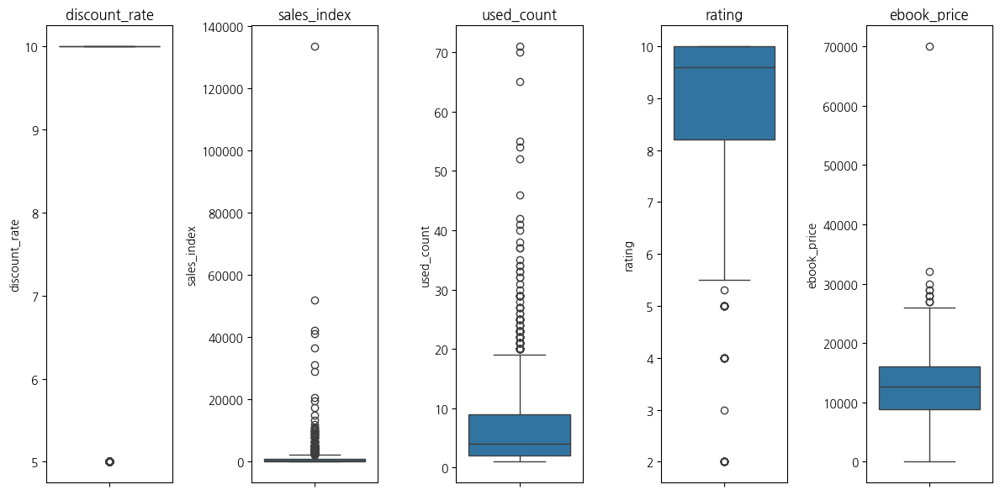
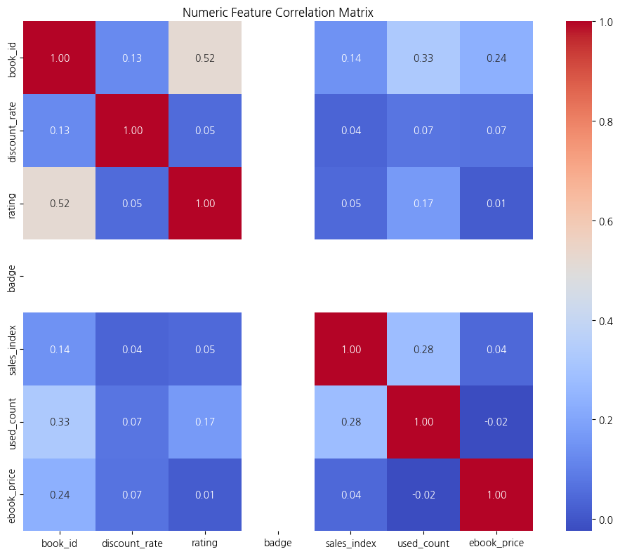
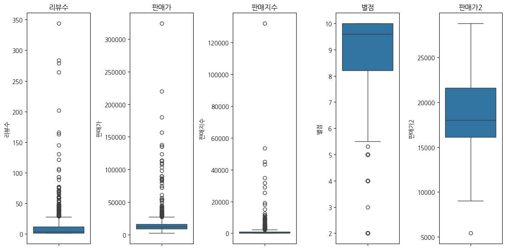
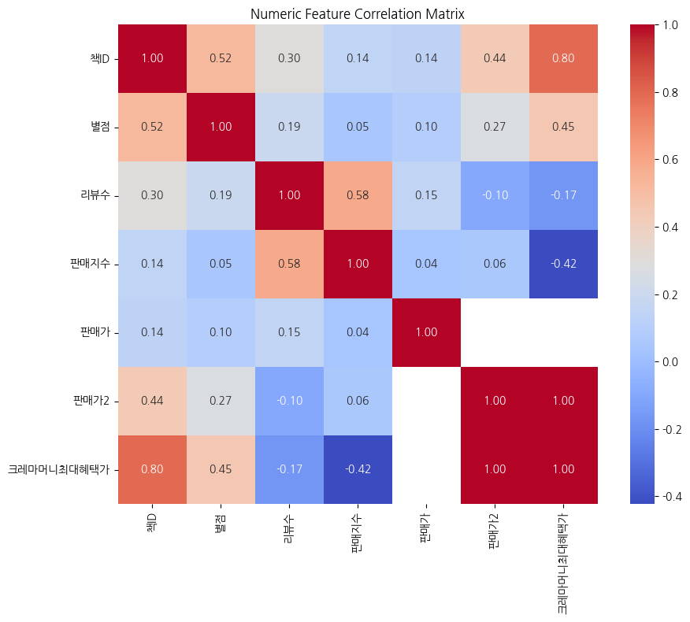

import pandas as pd컴퓨터 입문/활용
https://www.yes24.com/product/category/display/001001003019page_html
1. Data 확인
Load Data
url1 = "https://raw.githubusercontent.com/sw1kwon/Capstone1/refs/heads/main/yes24/page_html/001001003019.csv"
page = pd.read_csv(url1)page.head()| title | book_id | detail_url | category | author_raw | publisher | pub_date | original_price | sale_price | discount_rate | ... | is_reserved | has_preview | is_soldout | used_count | ebook_price | revised_notice | ebook_info | gift_info | description | image_url | |
|---|---|---|---|---|---|---|---|---|---|---|---|---|---|---|---|---|---|---|---|---|---|
| 0 | 엄마 아빠에게 선물하는 스마트폰 활용 + 챗GPT 무한 꿀팁 36 | 145993511 | https://www.yes24.com/product/goods/145993511 | 컴퓨터 입문/활용 | 온선(김은정) 저 | 골든래빗 | 2025년 06월 | 24,000 | 21,600 | 10.0 | ... | Y | NaN | NaN | NaN | NaN | NaN | NaN | NaN | 스마트폰은 24시간 엄마 아빠랑 있지만, 우리는 그러지 못한다!그래서 ‘이거 어떻게... | https://image.yes24.com/goods/145993511/L |
| 1 | 캔바로 쉽고 빠르게 콘텐츠 디자인하기 | 146262491 | https://www.yes24.com/product/goods/146262491 | 컴퓨터 입문/활용 | 권유진, 백은영, 서미경, 송민경, 안은진 저 외 3명\n ... | 아티오 | 2025년 05월 | 18,500 | 16,650 | 10.0 | ... | NaN | Y | NaN | NaN | NaN | NaN | NaN | NaN | 누구나 디자이너가 되는 시대, 이젠 캔바 하나로 무엇이든 만든다!AI와 디자인이 만... | https://image.yes24.com/goods/146262491/L |
| 2 | 선생님을 위한 캔바 수업 활용 | 146043037 | https://www.yes24.com/product/goods/146043037 | 컴퓨터 입문/활용 | 김민주 저 | 앤써북 | 2025년 05월 | 18,800 | 16,920 | 10.0 | ... | NaN | NaN | NaN | NaN | NaN | NaN | NaN | NaN | 초ㆍ중ㆍ고등학교 모든 선생님을 위한 캔바 활용 비법서캔바 A to Z까지, 수업 자... | https://image.yes24.com/goods/146043037/L |
| 3 | 레베기의 유튜브 콘텐츠 POWER 법칙 | 146285291 | https://www.yes24.com/product/goods/146285291 | 컴퓨터 입문/활용 | 레베기 저 | 리코멘드 | 2025년 05월 | 18,800 | 16,920 | 10.0 | ... | Y | Y | NaN | NaN | NaN | NaN | NaN | NaN | 기술자의 콘텐츠 혁명, 레베기가 알려주는 유튜브 비즈니스 전략서“기술만으로 인정받던... | https://image.yes24.com/goods/146285291/L |
| 4 | 인공지능과 함께하는 똑똑한 컴퓨터 놀이 | 146281744 | https://www.yes24.com/product/goods/146281744 | 컴퓨터 입문/활용 | 김도화 저/렉스기획팀 감수 | REXmedia(렉스미디어) | 2025년 05월 | 14,000 | 12,600 | 10.0 | ... | NaN | Y | NaN | NaN | NaN | NaN | NaN | NaN | 인공지능의 개념을 쉽게 이해하고 활용, 다양한 인공지능 프로그램의 체험 활동, 인공... | https://image.yes24.com/goods/146281744/L |
5 rows × 27 columns
데이터 구조 확인
page.shape(4078, 27)- 수집된 책은 총 4078권
# 데이터 구조 파악
# object 문자형
# int/float 수치형
page.info()<class 'pandas.core.frame.DataFrame'>
RangeIndex: 4078 entries, 0 to 4077
Data columns (total 27 columns):
# Column Non-Null Count Dtype
--- ------ -------------- -----
0 title 4078 non-null object
1 book_id 4078 non-null int64
2 detail_url 4078 non-null object
3 category 4078 non-null object
4 author_raw 4074 non-null object
5 publisher 4076 non-null object
6 pub_date 4074 non-null object
7 original_price 4078 non-null object
8 sale_price 4078 non-null object
9 discount_rate 3516 non-null float64
10 rating 1216 non-null float64
11 review_count 1216 non-null object
12 delivery_info 1242 non-null object
13 badge 0 non-null float64
14 signature 847 non-null object
15 series_name 943 non-null object
16 sales_index 963 non-null float64
17 is_reserved 2 non-null object
18 has_preview 1197 non-null object
19 is_soldout 2836 non-null object
20 used_count 2270 non-null float64
21 ebook_price 394 non-null float64
22 revised_notice 195 non-null object
23 ebook_info 507 non-null object
24 gift_info 89 non-null object
25 description 3212 non-null object
26 image_url 4078 non-null object
dtypes: float64(6), int64(1), object(20)
memory usage: 860.3+ KB- original_price, sale_price 은 모든 값이 존재, 나중에 수치형으로 변경 후 분석 필요
# 문자형(범주형) 데이터 확인
page.describe(include=['object']).T| count | unique | top | freq | |
|---|---|---|---|---|
| title | 4078 | 3581 | 한글 윈도우 95 | 37 |
| detail_url | 4078 | 4078 | https://www.yes24.com/product/goods/6059 | 1 |
| category | 4078 | 1 | 컴퓨터 입문/활용 | 4078 |
| author_raw | 4074 | 2604 | 렉스기획팀 저 | 56 |
| publisher | 4076 | 548 | 영진닷컴 | 383 |
| pub_date | 4074 | 394 | 1999년 01월 | 46 |
| original_price | 4078 | 160 | 10,000 | 372 |
| sale_price | 4078 | 237 | 9,000 | 328 |
| review_count | 1216 | 79 | 회원리뷰(1건) | 368 |
| delivery_info | 1242 | 8 | 2일 이내 (5/13, 화) 출고예정 | 648 |
| signature | 847 | 264 | CD | 257 |
| series_name | 943 | 539 | 우당탕탕 시리즈 | 26 |
| is_reserved | 2 | 1 | Y | 2 |
| has_preview | 1197 | 1 | Y | 1197 |
| is_soldout | 2836 | 3 | 절판 | 2372 |
| revised_notice | 195 | 1 | 개정판이 출간되었습니다. | 195 |
| ebook_info | 507 | 1 | Y | 507 |
| gift_info | 89 | 1 | Y | 89 |
| description | 3212 | 2900 | 쉽게 배우고 바로 쓰는 능력향상 시리즈본 능력향상 시리즈는 컴퓨터를 잘 다루지 못하... | 13 |
| image_url | 4078 | 4076 | https://image.yes24.com/momo/PD_19_L.gif | 3 |
- is_reserved, has_preview, ebook_info, gift_info (Y or N) 은 나중에 필요시 수치형으로 변경 후 분석
# 수치형 데이터 확인
page.describe(include=['int64','float64'])| book_id | discount_rate | rating | badge | sales_index | used_count | ebook_price | |
|---|---|---|---|---|---|---|---|
| count | 4.078000e+03 | 3516.000000 | 1216.000000 | 0.0 | 963.000000 | 2270.000000 | 394.000000 |
| mean | 3.392389e+07 | 9.661547 | 8.910033 | NaN | 1342.006231 | 6.530837 | 13488.121827 |
| std | 4.850521e+07 | 1.256249 | 1.544564 | NaN | 5607.593329 | 6.578788 | 6019.665738 |
| min | 4.040000e+02 | 5.000000 | 2.000000 | NaN | 12.000000 | 1.000000 | 0.000000 |
| 25% | 1.422985e+05 | 10.000000 | 8.200000 | NaN | 66.000000 | 2.000000 | 8800.000000 |
| 50% | 2.781368e+06 | 10.000000 | 9.600000 | NaN | 264.000000 | 4.000000 | 12600.000000 |
| 75% | 7.205797e+07 | 10.000000 | 10.000000 | NaN | 963.000000 | 9.000000 | 16000.000000 |
| max | 1.463612e+08 | 10.000000 | 10.000000 | NaN | 133395.000000 | 71.000000 | 70000.000000 |
2. EDA
1. (결측치) 각 column의 결측값 비율
# 각 column의 결측값 비율 계산
missing_ratio = page.isnull().mean() # 각 column의 결측값 비율 계산 (결측 개수 / 전체 row 수)
missing_ratio = missing_ratio.sort_values(ascending=False) # 결측 비율이 높은 순서대로 정렬
missing_ratio = missing_ratio.reset_index() # Series → DataFrame 변환 (인덱스 초기화)
missing_ratio.columns = ['Column', 'MissingRatio']
print(missing_ratio) Column MissingRatio
0 badge 1.000000
1 is_reserved 0.999510
2 gift_info 0.978176
3 revised_notice 0.952182
4 ebook_price 0.903384
5 ebook_info 0.875674
6 signature 0.792300
7 series_name 0.768759
8 sales_index 0.763855
9 has_preview 0.706474
10 rating 0.701815
11 review_count 0.701815
12 delivery_info 0.695439
13 used_count 0.443355
14 is_soldout 0.304561
15 description 0.212359
16 discount_rate 0.137813
17 author_raw 0.000981
18 pub_date 0.000981
19 publisher 0.000490
20 sale_price 0.000000
21 original_price 0.000000
22 detail_url 0.000000
23 book_id 0.000000
24 title 0.000000
25 category 0.000000
26 image_url 0.0000002. (이상치) 각 column별 이상치 확인
# 수치형 변수만 추출
numeric_cols = page.select_dtypes(include=['float64', 'int64']).columns
# 이상치 비율 저장용 리스트
outlier_info = []
# 각 수치형 column에 대해 이상치 비율 계산 (IQR 방식)
for col in numeric_cols:
Q1 = page[col].quantile(0.25)
Q3 = page[col].quantile(0.75)
IQR = Q3 - Q1
lower = Q1 - 1.5 * IQR
upper = Q3 + 1.5 * IQR
outliers = ((page[col] < lower) | (page[col] > upper)).sum()
outlier_ratio = outliers / page.shape[0]
outlier_info.append((col, outliers, outlier_ratio))
# 결과 DataFrame 정리
outlier_df = pd.DataFrame(outlier_info, columns=['Column', 'OutlierCount', 'OutlierRatio'])
outlier_df = outlier_df.sort_values(by='OutlierRatio', ascending=False)
print(outlier_df) Column OutlierCount OutlierRatio
1 discount_rate 238 0.058362
4 sales_index 108 0.026484
5 used_count 102 0.025012
2 rating 40 0.009809
6 ebook_price 11 0.002697
0 book_id 0 0.000000
3 badge 0 0.000000# 이상치 비율이 높은 상위 n개 변수만 시각화
import seaborn as sns
import matplotlib.pyplot as plt
# 이상치 비율 높은 상위 n개 변수만 선택
top_n = 5
top_outlier_cols = outlier_df.head(top_n)['Column']
# 박스플롯 시각화
plt.figure(figsize=(12, 6))
for i, col in enumerate(top_outlier_cols, 1):
plt.subplot(1, top_n, i)
sns.boxplot(y=page[col])
plt.title(col)
plt.tight_layout()
plt.show()
이상치가 있는 row 확인
page.loc[page['sales_index'] > 20000, ['title', 'book_id', 'author_raw', 'publisher', 'pub_date', 'sale_price', 'sales_index']]\
.sort_values(by='sales_index', ascending=False)| title | book_id | author_raw | publisher | pub_date | sale_price | sales_index | |
|---|---|---|---|---|---|---|---|
| 623 | 진짜 쓰는 실무 엑셀 | 106711883 | 전진권 저 | 제이펍 | 2022년 02월 | 18,900 | 133395.0 |
| 183 | 된다! 하루 만에 끝내는 챗GPT 활용법 | 129394634 | 프롬프트 크리에이터 저 | 이지스퍼블리싱 | 2024년 07월 | 15,480 | 52011.0 |
| 139 | 2022 개정 교육과정 평가, AI로 날개를 달다 (개념기반 교육과정) | 130156178 | 지미정, 오한나, 노명호, 권의선, 김영수 저 외 4명\n ... | 앤써북 | 2024년 09월 | 18,900 | 42108.0 |
| 92 | 이게 되네? 챗GPT 미친 활용법 71제 | 140835200 | 오힘찬 저 | 골든래빗 | 2025년 01월 | 21,600 | 41253.0 |
| 36 | 커서 AI 트렌드&활용백과 | 143912095 | 서승완 저 | 스마트북스 | 2025년 03월 | 22,500 | 36501.0 |
| 119 | 혼자 해도 프로 선생님처럼 잘 만드는 학교 수업 자료 with 캔바 Canva | 135760031 | 김태훈, 김한나, 김예슬, 손민지, 유수근 저 | 한빛미디어 | 2024년 10월 | 20,700 | 31239.0 |
| 194 | 이게 되네? 챗GPT 미친 활용법 51제 | 128249326 | 오힘찬 저 | 골든래빗 | 2024년 07월 | 21,600 | 29034.0 |
| 30 | 된다! 조회수 터지는 유튜브 쇼츠 만들기 | 143907967 | 최지영 저 | 이지스퍼블리싱 | 2025년 04월 | 19,800 | 20628.0 |
주제: 대부분 AI, ChatGPT, 유튜브 쇼츠, Canva, 실무 엑셀 등 디지털 도구 활용서
출판 시기: 대부분 2024년 또는 2025년 출판 => 최신 트렌드와 연결
ChatGPT 활용법 관련 도서가 2024년부터 다수 등장, 특히 같은 저자(오힘찬)의 유사 시리즈가 연속적으로 인기도를 끔
- 오힘찬 저자는 2권이나 리스트에 포함되어 있음 => 시리즈화 or 브랜드 저자의 강력한 영향
- 이는 시리즈 출간 전략이 효과적임을 시사
page.loc[page['used_count'] > 40, ['title', 'book_id', 'author_raw', 'publisher', 'pub_date', 'sale_price', 'sales_index', 'used_count']]\
.sort_values(by='used_count', ascending=False)| title | book_id | author_raw | publisher | pub_date | sale_price | sales_index | used_count | |
|---|---|---|---|---|---|---|---|---|
| 2805 | 인터넷이 이럴수가 | 179924 | 정윤희 저 / 백정현 그림 | 주니어김영사 | 2001년 01월 | 5,310 | NaN | 71.0 |
| 2027 | 2006~2007 디지털콘텐츠 산업백서 | 2662887 | 한국소프트웨어진흥원 저 | 진한엠앤비 | 2007년 07월 | 90,000 | NaN | 70.0 |
| 1768 | 트위터 + 페이스북 길라잡이 | 4154195 | 옵스큐어 저 / 신영희 역 | 정보문화사 | 2010년 08월 | 10,800 | NaN | 65.0 |
| 1804 | Twitter 트위터 무작정 따라하기 | 3769076 | 정광현 저 | 길벗 | 2010년 03월 | 12,600 | NaN | 55.0 |
| 882 | 구글 클래스룸 수업 레시피 | 90004431 | Google Educator Group South Korea, 박정철, 장성순, 신... | 프리렉 | 2020년 04월 | 19,800 | 834.0 | 54.0 |
| 1028 | 교실의 미래 구글 클래스룸 | 71750983 | Google Educator Group South Korea, 박종필, 윤현철, 신... | 프리렉 | 2019년 04월 | 18,000 | 342.0 | 52.0 |
| 623 | 진짜 쓰는 실무 엑셀 | 106711883 | 전진권 저 | 제이펍 | 2022년 02월 | 18,900 | 133395.0 | 46.0 |
| 1396 | 프로들의 에버노트 | 20242387 | 홍순성 저 | 영진닷컴 | 2015년 09월 | 18,000 | 84.0 | 42.0 |
| 1328 | 스크래치 주니어로 배우는 맨 처음 코딩 | 30436645 | 고정아 역 | 뭉치 | 2016년 08월 | 12,600 | 120.0 | 41.0 |
- sales_index가 NaN인 책들이 많음: 최신 판매 지표는 낮거나 수집 불가
- 유일하게 sales_index가 매우 높은 책은 “진짜 쓰는 실무 엑셀” => 신간임에도 중고거래도 활발한 예외적 케이스
- sales_index가 압도적으로 1위이므로 그만큼 중고거래도 활발하다고 생각할 수 있음
- 정가가 낮은 책들이 많지만, “2006~2007 디지털 콘텐츠 산업백서”는 정가가 90,000원으로 매우 높음 => 공공기관, 자료집 성격
page.loc[page['rating'] <= 3, ['title', 'book_id', 'author_raw', 'publisher', 'pub_date', 'sale_price', 'sales_index', 'rating', 'review_count']]\
.sort_values(by='rating', ascending=False)| title | book_id | author_raw | publisher | pub_date | sale_price | sales_index | rating | review_count | |
|---|---|---|---|---|---|---|---|---|---|
| 1301 | 프로세스의 진정한 주인이 되라 | 35553075 | 신철민 저 | 프로젝트리서치(주) | 2017년 01월 | 13,500 | 36.0 | 3.0 | 회원리뷰(2건) |
| 617 | 어르신들을 위한 스마트폰 중급 교실 : 스마트폰 중급편 | 107689506 | 이종구, 김근희, 허진건, 이설희 저 | 에스엔에스소통연구소 | 2022년 02월 | 13,500 | NaN | 2.0 | 회원리뷰(1건) |
| 940 | 엔트리로 애완 로봇 키우기 | 84889515 | 코딩연구소 저 | 마린북스 | 2020년 01월 | 9,000 | NaN | 2.0 | 회원리뷰(2건) |
| 971 | 비버챌린지 2: 비버챌린지로 배우는 소프트웨어(초등학생용) | 80775123 | Bebras Korea 저 | 생능출판사 | 2019년 10월 | 14,250 | 492.0 | 2.0 | 회원리뷰(1건) |
| 1015 | 비버 챌린지 -2018년도 기출문제집- (초등학생용) | 74035452 | Bebras Korea 저 | 생능출판사 | 2019년 05월 | 7,600 | 54.0 | 2.0 | 회원리뷰(1건) |
| 1070 | 초보자도 만드는 사물 인터넷 IOT | 34415845 | 임수동, 전재석, 조장원 공저 | 크라운출판사 | 2019년 01월 | 22,500 | NaN | 2.0 | 회원리뷰(1건) |
| 1718 | 초등학교 컴퓨터와 생활 1학년 | 5265286 | 초등 ICT교육연구회 저 | 학문사 | 2011년 02월 | 4,940 | NaN | 2.0 | 회원리뷰(1건) |
| 1719 | 초등학교 컴퓨터와 생활 2학년 | 5265285 | 초등 ICT교육연구회 저 | 학문사 | 2011년 02월 | 5,300 | 36.0 | 2.0 | 회원리뷰(1건) |
| 2141 | 유아 교육 교사를 위한 컴퓨터 활용과 실제 | 1975564 | 손재석, 김명순, 노은영 공저 | 21세기사 | 2006년 02월 | 18,000 | NaN | 2.0 | 회원리뷰(1건) |
| 2677 | 한글윈도 98 | 217487 | 정석만 | 아이콘 | 2001년 07월 | 7,200 | NaN | 2.0 | 회원리뷰(1건) |
| 2771 | 한글 윈도우 98 10분이면 나도 한다 | 186041 | 기획1팀 | 삼각형북스 | 2001년 02월 | 5,220 | NaN | 2.0 | 회원리뷰(1건) |
| 2974 | 이야기로 보는 밀레니엄 주부의 인터넷 하루 | 122574 | 주혜경 등저 | 영진닷컴 | 2000년 04월 | 2,250 | NaN | 2.0 | 회원리뷰(1건) |
| 3058 | 나는 PC왕! | 105804 | 이영희 저 | 삼성출판사 | 2000년 02월 | 7,650 | NaN | 2.0 | 회원리뷰(1건) |
| 3228 | 노트북 초특급 활용 | 60479 | 이송만 | 사이버출판사 | 1999년 07월 | 8,100 | NaN | 2.0 | 회원리뷰(1건) |
- 대부분 2.0, 리뷰 수는 매우 적음 (1~2건)
- 평균 평점의 신뢰도가 낮을 수 있음
- 즉, 낮은 평점이라기보단 평가 샘플이 적음이라는 의미로 해석 가능
page.loc[
page['ebook_price'].isin(page['ebook_price'].nlargest(6))
].sort_values(by='ebook_price', ascending=False)[
['title', 'book_id', 'author_raw', 'publisher', 'pub_date', 'sale_price', 'sales_index', 'ebook_price']
]| title | book_id | author_raw | publisher | pub_date | sale_price | sales_index | ebook_price | |
|---|---|---|---|---|---|---|---|---|
| 1917 | 디지털콘텐츠 산업백서 2008 | 3086679 | 한국소프트웨어진흥원 | 진한엠앤비 | 2008년 10월 | 90,000 | NaN | 70000.0 |
| 547 | 구글 앱스 스크립트 완벽 가이드 | 110350965 | 다카하시 노리아키 저/김모세 역 | 한빛미디어 | 2022년 07월 | 36,000 | 600.0 | 32000.0 |
| 824 | 조코디의 G Suite를 이용한 재택근무 바이블 | 92874610 | 조코디 저 | 디지털북스 | 2020년 09월 | 27,000 | 12.0 | 30000.0 |
| 382 | 난생처음 자바 프로그래밍 | 119842978 | 우재남 저 | 한빛아카데미 | 2023년 06월 | 29,000 | 780.0 | 29000.0 |
| 1047 | 손에 잡히는 컴퓨터 활용 - 파워포인트 & 엑셀 | 70370358 | 홍현술 저 | 동화기술 | 2019년 03월 | 25,000 | NaN | 29000.0 |
| 184 | 포토샵 & AI 완벽 시너지 | 129120974 | 쌩초 저 | 비제이퍼블릭(BJ퍼블릭) | 2024년 07월 | 31,500 | 960.0 | 28000.0 |
| 555 | 인공지능 앱 프로젝트 with 앱 인벤터 | 109745518 | Sunny 저 | 디지털북스 | 2022년 06월 | 25,200 | 402.0 | 28000.0 |
| 563 | 개발자가 되기 위해 꼭 알아야 하는 IT 용어 | 109711067 | 고승원, 강동준, 강시혁, 강지효, 곽봉선 저 외 17명\n ... | 비제이퍼블릭(BJ퍼블릭) | 2022년 05월 | 31,500 | 324.0 | 28000.0 |
- 대체로 전자책의 가격은 종이책의 80~100% 수준, 일부는 전자책이 더 비쌈
3. (unique) 각 column의 unique값과 unique값별 빈도
# 범주형 변수만 대상
cat_cols = page.select_dtypes(include=['object']).columns
for col in cat_cols:
print(f"=== {col} ===")
print("Unique count:", page[col].nunique())
value_counts = page[col].value_counts(dropna=False, sort=False)
value_ratio = page[col].value_counts(normalize=True, dropna=False, sort=False) * 100
summary_df = pd.DataFrame({
'Count': value_counts,
'Ratio (%)': value_ratio.round(2)
})
print(summary_df)
print("\n")=== title ===
Unique count: 3581
Count Ratio (%)
title
엄마 아빠에게 선물하는 스마트폰 활용 + 챗GPT 무한 꿀팁 36 1 0.02
캔바로 쉽고 빠르게 콘텐츠 디자인하기 1 0.02
선생님을 위한 캔바 수업 활용 1 0.02
레베기의 유튜브 콘텐츠 POWER 법칙 1 0.02
인공지능과 함께하는 똑똑한 컴퓨터 놀이 1 0.02
... ... ...
어린이 컴퓨터 지능계발 1 0.02
기술자를 위한 컴퓨터의 활용 1 0.02
나혼자 즐기는 영화 사이트 1 0.02
PC 시스템 충돌 해결과 예방 1 0.02
이주혁의 한글 윈도우 98 인터넷 네트워크 1 0.02
[3581 rows x 2 columns]
=== detail_url ===
Unique count: 4078
Count Ratio (%)
detail_url
https://www.yes24.com/product/goods/145993511 1 0.02
https://www.yes24.com/product/goods/146262491 1 0.02
https://www.yes24.com/product/goods/146043037 1 0.02
https://www.yes24.com/product/goods/146285291 1 0.02
https://www.yes24.com/product/goods/146281744 1 0.02
... ... ...
https://www.yes24.com/product/goods/140419 1 0.02
https://www.yes24.com/product/goods/10303 1 0.02
https://www.yes24.com/product/goods/7198 1 0.02
https://www.yes24.com/product/goods/6214 1 0.02
https://www.yes24.com/product/goods/6059 1 0.02
[4078 rows x 2 columns]
=== category ===
Unique count: 1
Count Ratio (%)
category
컴퓨터 입문/활용 4078 100.0
=== author_raw ===
Unique count: 2604
Count Ratio (%)
author_raw
온선(김은정) 저 1 0.02
권유진, 백은영, 서미경, 송민경, 안은진 저 외 3명\n ... 1 0.02
김민주 저 1 0.02
레베기 저 1 0.02
김도화 저/렉스기획팀 감수 1 0.02
... ... ...
성현경, 현병호 공저 1 0.02
세진출판사편집부 1 0.02
박명규 1 0.02
Jim, Aspinwall 공저 1 0.02
박선경 1 0.02
[2605 rows x 2 columns]
=== publisher ===
Unique count: 548
Count Ratio (%)
publisher
골든래빗 16 0.39
아티오 10 0.25
앤써북 23 0.56
리코멘드 2 0.05
REXmedia(렉스미디어) 126 3.09
... ... ...
정훈출판사 1 0.02
동신출판사 1 0.02
매크로 1 0.02
혜원출판사 1 0.02
세진출판사 1 0.02
[549 rows x 2 columns]
=== pub_date ===
Unique count: 394
Count Ratio (%)
pub_date
2025년 06월 1 0.02
2025년 05월 10 0.25
2025년 04월 22 0.54
2025년 03월 18 0.44
2025년 02월 18 0.44
... ... ...
1990년 08월 1 0.02
1989년 07월 1 0.02
1986년 01월 1 0.02
1985년 03월 1 0.02
NaN 4 0.10
[395 rows x 2 columns]
=== original_price ===
Unique count: 160
Count Ratio (%)
original_price
24,000 37 0.91
18,500 9 0.22
18,800 15 0.37
14,000 144 3.53
10,000 372 9.12
... ... ...
360,000 1 0.02
6,800 3 0.07
80,000 1 0.02
220,000 1 0.02
75,000 1 0.02
[160 rows x 2 columns]
=== sale_price ===
Unique count: 237
Count Ratio (%)
sale_price
21,600 28 0.69
16,650 7 0.17
16,920 15 0.37
12,600 116 2.84
9,000 328 8.04
... ... ...
72,000 1 0.02
4,270 2 0.05
9,020 1 0.02
220,000 1 0.02
75,000 1 0.02
[237 rows x 2 columns]
=== review_count ===
Unique count: 79
Count Ratio (%)
review_count
NaN 2862 70.18
회원리뷰(10건) 34 0.83
회원리뷰(2건) 159 3.90
회원리뷰(5건) 41 1.01
회원리뷰(12건) 18 0.44
... ... ...
회원리뷰(27건) 3 0.07
회원리뷰(145건) 1 0.02
회원리뷰(89건) 1 0.02
회원리뷰(69건) 1 0.02
회원리뷰(130건) 1 0.02
[80 rows x 2 columns]
=== delivery_info ===
Unique count: 8
Count Ratio (%)
delivery_info
6/2(월) 발송예정(예약판매) 1 0.02
2일 이내 (5/13, 화) 출고예정 648 15.89
24시까지 주문하면 내일 (5/12, 월) 도착예정 471 11.55
5/15(목) 발송예정(예약판매) 1 0.02
6일 이내 (5/17, 토) 출고예정 16 0.39
NaN 2836 69.54
3일 이내 (5/14, 수) 출고예정 78 1.91
2일 이내 출고예정 11 0.27
4일 이내 (5/15, 목) 출고예정 16 0.39
=== signature ===
Unique count: 264
Count Ratio (%)
signature
NaN 3231 79.23
개정판 36 0.88
2판 10 0.25
2025 개정증보판 1 0.02
2권 4 0.10
... ... ...
CD 2장 1 0.02
포켓북 1 0.02
CD.인터넷 주소록 1 0.02
디스켓 2장 1 0.02
5.25 디스켓 1 0.02
[265 rows x 2 columns]
=== series_name ===
Unique count: 539
Count Ratio (%)
series_name
NaN 3135 76.88
Start up 스타트업 시리즈 2 0.05
OA마스터 5 0.12
지적생활자를 위한 교과서 시리즈 1 0.02
된다! 시리즈 24 0.59
... ... ...
시작합시다-01 1 0.02
쉽게 배우는-11 1 0.02
따라해보세요-01 2 0.05
따라해보세요-43 1 0.02
따라해보세요-10 1 0.02
[540 rows x 2 columns]
=== is_reserved ===
Unique count: 1
Count Ratio (%)
is_reserved
Y 2 0.05
NaN 4076 99.95
=== has_preview ===
Unique count: 1
Count Ratio (%)
has_preview
NaN 2881 70.65
Y 1197 29.35
=== is_soldout ===
Unique count: 3
Count Ratio (%)
is_soldout
NaN 1242 30.46
품절 439 10.77
절판 2372 58.17
일시품절 25 0.61
=== revised_notice ===
Unique count: 1
Count Ratio (%)
revised_notice
NaN 3883 95.22
개정판이 출간되었습니다. 195 4.78
=== ebook_info ===
Unique count: 1
Count Ratio (%)
ebook_info
NaN 3571 87.57
Y 507 12.43
=== gift_info ===
Unique count: 1
Count Ratio (%)
gift_info
NaN 3989 97.82
Y 89 2.18
=== description ===
Unique count: 2900
Count Ratio (%)
description
스마트폰은 24시간 엄마 아빠랑 있지만, 우리는 그러지 못한다!그래서 ‘이거 어떻게 ... 1 0.02
누구나 디자이너가 되는 시대, 이젠 캔바 하나로 무엇이든 만든다!AI와 디자인이 만난... 1 0.02
초ㆍ중ㆍ고등학교 모든 선생님을 위한 캔바 활용 비법서캔바 A to Z까지, 수업 자료... 1 0.02
기술자의 콘텐츠 혁명, 레베기가 알려주는 유튜브 비즈니스 전략서“기술만으로 인정받던 ... 1 0.02
인공지능의 개념을 쉽게 이해하고 활용, 다양한 인공지능 프로그램의 체험 활동, 인공지... 1 0.02
... ... ...
PC는 각종 언어와 DOS를 잘 이해하지 못하면 기능을 충분히 활용할 수 없다. MS... 1 0.02
기술자에게 유용한 컴퓨터 활용 방안 소개하고 있는 책이다. 1 0.02
하드웨어 관련 에러의 90% 이상을 차지하고 있는 IRQ, DMA, I/O는 새로운 ... 1 0.02
이 책은 윈도우 98을 잘 모르는 분들을 위해 구성했습니다. 따라서 윈도우를 사용하기... 1 0.02
한글 윈도우 98 인터넷 네트워크에 대해서 이해하기 쉽도록 자세히 설명하고 있는 책이다. 1 0.02
[2901 rows x 2 columns]
=== image_url ===
Unique count: 4076
Count Ratio (%)
image_url
https://image.yes24.com/goods/145993511/L 1 0.02
https://image.yes24.com/goods/146262491/L 1 0.02
https://image.yes24.com/goods/146043037/L 1 0.02
https://image.yes24.com/goods/146285291/L 1 0.02
https://image.yes24.com/goods/146281744/L 1 0.02
... ... ...
https://image.yes24.com/goods/140419/L 1 0.02
https://image.yes24.com/goods/10303/L 1 0.02
https://image.yes24.com/goods/7198/L 1 0.02
https://image.yes24.com/goods/6214/L 1 0.02
https://image.yes24.com/goods/6059/L 1 0.02
[4076 rows x 2 columns]
column 별로 각 row 비율 확인
def summarize_category(df, column, top_n=None, exclude_na=True):
"""
범주형 변수 요약 (건수 + 비율)
Parameters:
- df: DataFrame
- column: 분석할 열 이름 (문자열)
- top_n: 상위 n개만 출력 (None이면 전체)
- exclude_na: NaN 제외 여부
Returns:
- summary DataFrame
"""
counts = df[column].value_counts(dropna=exclude_na)
ratios = df[column].value_counts(normalize=True, dropna=exclude_na).mul(100).round(2)
summary = pd.DataFrame({
'건수': counts,
'비율(%)': ratios
}).reset_index().rename(columns={'index': column})
if top_n is not None:
summary = summary.head(top_n)
return summarysummarize_category(page, 'author_raw', top_n=10) # 저자 전체| author_raw | 건수 | 비율(%) | |
|---|---|---|---|
| 0 | 렉스기획팀 저 | 56 | 1.37 |
| 1 | 해람북스 기획팀 저 | 38 | 0.93 |
| 2 | 방과후교육연구회 저 | 36 | 0.88 |
| 3 | 편집부 | 34 | 0.83 |
| 4 | 오상열 저 | 33 | 0.81 |
| 5 | 이순원 저 | 33 | 0.81 |
| 6 | 교재개발팀 저 | 33 | 0.81 |
| 7 | 편집부 저 | 31 | 0.76 |
| 8 | 웰북교재연구회 저 | 30 | 0.74 |
| 9 | IT교재연구팀 저 | 24 | 0.59 |
summarize_category(page, 'publisher', top_n=10) # 출판사| publisher | 건수 | 비율(%) | |
|---|---|---|---|
| 0 | 영진닷컴 | 383 | 9.40 |
| 1 | 길벗 | 160 | 3.93 |
| 2 | REXmedia(렉스미디어) | 126 | 3.09 |
| 3 | 크라운출판사 | 106 | 2.60 |
| 4 | 아카데미소프트 | 106 | 2.60 |
| 5 | 해람북스 | 99 | 2.43 |
| 6 | 삼각형프레스 | 92 | 2.26 |
| 7 | 교학사 | 91 | 2.23 |
| 8 | 혜지원 | 86 | 2.11 |
| 9 | 웰북 | 84 | 2.06 |
- 출판사 영진닷컴의 비율이 매우 높음
summarize_category(page, 'review_count', top_n=10) # 리뷰 수| review_count | 건수 | 비율(%) | |
|---|---|---|---|
| 0 | 회원리뷰(1건) | 368 | 30.26 |
| 1 | 회원리뷰(2건) | 159 | 13.08 |
| 2 | 회원리뷰(3건) | 83 | 6.83 |
| 3 | 회원리뷰(4건) | 66 | 5.43 |
| 4 | 회원리뷰(6건) | 46 | 3.78 |
| 5 | 회원리뷰(5건) | 41 | 3.37 |
| 6 | 회원리뷰(8건) | 37 | 3.04 |
| 7 | 회원리뷰(10건) | 34 | 2.80 |
| 8 | 회원리뷰(9건) | 28 | 2.30 |
| 9 | 회원리뷰(11건) | 26 | 2.14 |
summarize_category(page, 'series_name', top_n=10) # 시리즈| series_name | 건수 | 비율(%) | |
|---|---|---|---|
| 0 | 우당탕탕 시리즈 | 26 | 2.76 |
| 1 | 된다! 시리즈 | 24 | 2.55 |
| 2 | 컴선생 여우님 시리즈 | 17 | 1.80 |
| 3 | 웰컴교실 | 15 | 1.59 |
| 4 | 테마학습 | 12 | 1.27 |
| 5 | 즐거운 컴퓨터 교실-01 | 12 | 1.27 |
| 6 | 능력향상 시즌2 | 12 | 1.27 |
| 7 | 내친구 컴박사 | 10 | 1.06 |
| 8 | 길벗-모두의 시리즈 | 10 | 1.06 |
| 9 | 한빛아카데미-IT COOKBOOK | 10 | 1.06 |
4. (기술통계) 각 column의 기술통계 (평균값, 최대값, 최솟값, 최빈값, 분위수 등)
# 수치형 변수만 선택
numeric_cols = page.select_dtypes(include=['float64', 'int64']).columns
# 통계 요약 저장용 리스트
stat_list = []
for col in numeric_cols:
desc = page[col].describe()
mode = page[col].mode(dropna=False).values[0] # 최빈값 (여러 개 중 첫 번째 선택)
mode_all = page[col].mode(dropna=False).tolist() # 최빈값 리스트 형태로 저장
stat_list.append({
'Feature': col,
'Count': desc['count'],
'Mean': desc['mean'],
'Std': desc['std'],
'Min': desc['min'],
'25%': desc['25%'],
'Median (50%)': desc['50%'],
'75%': desc['75%'],
'Max': desc['max'],
'Mode': mode,
'Mode_all': mode_all
})
# DataFrame으로 정리
stats_df = pd.DataFrame(stat_list)
stats_df| Feature | Count | Mean | Std | Min | 25% | Median (50%) | 75% | Max | Mode | Mode_all | |
|---|---|---|---|---|---|---|---|---|---|---|---|
| 0 | book_id | 4078.0 | 3.392389e+07 | 4.850521e+07 | 404.0 | 142298.5 | 2781367.5 | 72057970.0 | 146361202.0 | 404.0 | [404, 664, 972, 1275, 1499, 1514, 1523, 1524, ... |
| 1 | discount_rate | 3516.0 | 9.661547e+00 | 1.256249e+00 | 5.0 | 10.0 | 10.0 | 10.0 | 10.0 | 10.0 | [10.0] |
| 2 | rating | 1216.0 | 8.910033e+00 | 1.544564e+00 | 2.0 | 8.2 | 9.6 | 10.0 | 10.0 | NaN | [nan] |
| 3 | badge | 0.0 | NaN | NaN | NaN | NaN | NaN | NaN | NaN | NaN | [nan] |
| 4 | sales_index | 963.0 | 1.342006e+03 | 5.607593e+03 | 12.0 | 66.0 | 264.0 | 963.0 | 133395.0 | NaN | [nan] |
| 5 | used_count | 2270.0 | 6.530837e+00 | 6.578788e+00 | 1.0 | 2.0 | 4.0 | 9.0 | 71.0 | NaN | [nan] |
| 6 | ebook_price | 394.0 | 1.348812e+04 | 6.019666e+03 | 0.0 | 8800.0 | 12600.0 | 16000.0 | 70000.0 | NaN | [nan] |
- rating(별점)
- 평균 = 8.91, 중앙값 = 9.6 => 전반적으로 좋은 평가 위주
- 평점 분포가 오른쪽에 몰림(긍정 편향)
5. (상관관계) 상관관계 매트릭스
# 수치형 변수 간 상관관계 매트릭스
import seaborn as sns
import matplotlib.pyplot as plt
# 수치형 변수만 선택
numeric_df = page.select_dtypes(include=['float64', 'int64'])
# 상관계수 계산
corr_matrix = numeric_df.corr()
# 시각화
plt.figure(figsize=(10, 8))
sns.heatmap(corr_matrix, annot=True, cmap='coolwarm', fmt=".2f", square=True)
plt.title("Numeric Feature Correlation Matrix")
plt.tight_layout()
plt.show()
book_html
1. Data 확인
import pandas as pdLoad Data
url2 = "https://raw.githubusercontent.com/sw1kwon/Capstone1/refs/heads/main/yes24/book_html/ITM001001003019.csv"
book = pd.read_csv(url2)book.head()| 대분류 | 중분류 | 소분류 | 책ID | 제목 | 소제목 | 시리즈 | 시리즈링크 | 저자전체 | 출판사 | ... | 출판사리뷰 | 책속으로 | 추천평 | 발행일2 | 쪽수무게크기 | ISBN13 | ISBN10 | og_image | twitter_title | canonical_url | |
|---|---|---|---|---|---|---|---|---|---|---|---|---|---|---|---|---|---|---|---|---|---|
| 0 | IT 모바일 | 컴퓨터 입문/활... | 어른을 위한 컴... | 133890598 | 세상에서 가장 쉬운 스마트폰 배우기 | NaN | NaN | NaN | 안용봉 저 | IMK | ... | NaN | NaN | NaN | 2025년 01월 10일 | 192쪽 | 210*290*20mm | 9788940649046 | 8940649044 | https://image.yes24.com/goods/133890598/XL | 세상에서 가장 쉬운 스마트폰 배우기 - 예스24 | https://www.yes24.com/product/goods/133890598 |
| 1 | IT 모바일 | 컴퓨터 입문/활... | 어른을 위한 컴... | 135722461 | 이게 되네? 업무 자동화 미친 활용 앱스 스크립트 with 챗GPT | 업무부터 일상까지, 3일 작업 한 방에 처리하는 45가지 미친 자동화 치트키 | NaN | NaN | 서휘승 저 | 골든래빗 | ... | <B>500% 효과 내는 오픈 카톡방, 네이버 카페에서 함께 연구해요.</b><br... | NaN | 업무에서 구글 스프레드시트와 구글 설문을 정말 많이 활용하는데, 추가로 구현하면 좋... | 2024년 11월 01일 | 464쪽 | 183*235*21mm | 9791191905991 | NaN | https://image.yes24.com/goods/135722461/XL | 이게 되네? 업무 자동화 미친 활용 앱스 스크립트 with 챗GPT - 예스24 | https://www.yes24.com/product/goods/135722461 |
| 2 | IT 모바일 | 인터넷 비즈니스 | 인터넷 마케팅 | 135760031 | 혼자 해도 프로 선생님처럼 잘 만드는 학교 수업 자료 with 캔바 Canva | 현직 교사 5인이 알려주는 교육용 캔바를 활용한 에듀테크 수업의 모든 것 | NaN | NaN | 김태훈, 김한나, 김예슬, 손민지, 유수근 저 | 한빛미디어 | ... | <b>ㆍ 혼자 해도 정말 쉽다!</b><br/><br/>캔바에 익숙하지 않아도, 디... | NaN | Canva를 활용해 나만의 수업을 만들고 싶은 분들 모두 모여주세요! 교육용 계정을... | 2024년 10월 31일 | 312쪽 | 674g | 188*257*14mm | 9791169212663 | 1169212662 | https://image.yes24.com/goods/135760031/XL | 혼자 해도 프로 선생님처럼 잘 만드는 학교 수업 자료 with 캔바 Canva - ... | https://www.yes24.com/product/goods/135760031 |
| 3 | IT 모바일 | 컴퓨터 입문/활... | 어른을 위한 컴... | 135904296 | 스마트폰 SNS | 카카오톡, 카카오페이, 카카오맵, 카카오T, 인스타그램 | 능력향상 시즌5 | https://www.yes24.com/product/category/series/... | 오상열 저 | 아이콕스(iCox) | ... | NaN | NaN | NaN | 2024년 10월 31일 | 192쪽 | 518g | 210*297*9mm | 9791164262571 | 1164262572 | https://image.yes24.com/goods/135904296/XL | 스마트폰 SNS - 예스24 | https://www.yes24.com/product/goods/135904296 |
| 4 | IT 모바일 | 그래픽/디자인/... | 포토샵 | 136274608 | 망고보드 AI로 나도 이제 디자이너 | NaN | NaN | NaN | 놀이교육콘텐츠랩 저 | 마린북스 | ... | ▶ STEP 1 : 필요한 디자인 템플릿을 검색<br/><br/>▶ STEP 2 :... | NaN | NaN | 2024년 11월 12일 | 156쪽 | 210*287*20mm | 9791192119359 | 1192119355 | https://image.yes24.com/goods/136274608/XL | 망고보드 AI로 나도 이제 디자이너 - 예스24 | https://www.yes24.com/product/goods/136274608 |
5 rows × 43 columns
데이터 구조 확인
book.shape(4075, 43)- 수집된 책은 총 4075권 (html에서 수집된 책은 총 4078권)
# 데이터 구조 파악
# object 문자형
# int/float 수치형
book.info()<class 'pandas.core.frame.DataFrame'>
RangeIndex: 4075 entries, 0 to 4074
Data columns (total 43 columns):
# Column Non-Null Count Dtype
--- ------ -------------- -----
0 대분류 4075 non-null object
1 중분류 4075 non-null object
2 소분류 4054 non-null object
3 책ID 4075 non-null int64
4 제목 4075 non-null object
5 소제목 1295 non-null object
6 시리즈 946 non-null object
7 시리즈링크 943 non-null object
8 저자전체 4075 non-null object
9 출판사 4025 non-null object
10 출판사링크 4023 non-null object
11 발행일 4021 non-null object
12 별점 1218 non-null float64
13 리뷰수 1218 non-null float64
14 판매지수 965 non-null float64
15 정가 3996 non-null object
16 판매가 3996 non-null float64
17 정가2 79 non-null object
18 판매가2 79 non-null float64
19 크레마머니최대혜택가 7 non-null float64
20 관련분류 4075 non-null object
21 책소개 3242 non-null object
22 목차 3507 non-null object
23 저자1 2411 non-null object
24 저자1소개 427 non-null object
25 저자1소개2 1112 non-null object
26 저자2 730 non-null object
27 저자2소개 144 non-null object
28 저자2소개2 379 non-null object
29 저자3 352 non-null object
30 저자3소개 45 non-null object
31 저자3소개2 220 non-null object
32 만든이코멘트 4075 non-null object
33 출판사리뷰 1238 non-null object
34 책속으로 371 non-null object
35 추천평 171 non-null object
36 발행일2 4075 non-null object
37 쪽수무게크기 4075 non-null object
38 ISBN13 4032 non-null object
39 ISBN10 3906 non-null object
40 og_image 4075 non-null object
41 twitter_title 4074 non-null object
42 canonical_url 4075 non-null object
dtypes: float64(6), int64(1), object(36)
memory usage: 1.3+ MB- 대분류, 중분류, 저자전체, 관련 분류, 만든이코멘트, 발행일2, 쪽수무게크기, og_image, canonical_url 은 모든 값이 존재
# 문자형(범주형) 데이터 확인
book.describe(include=['object']).T| count | unique | top | freq | |
|---|---|---|---|---|
| 대분류 | 4075 | 10 | IT 모바일 | 3864 |
| 중분류 | 4075 | 40 | 컴퓨터 입문/활... | 3603 |
| 소분류 | 4054 | 58 | 어른을 위한 컴... | 1444 |
| 제목 | 4075 | 3578 | 한글 윈도우 95 | 37 |
| 소제목 | 1295 | 1072 | 컴퓨터 특기적성 전문교재 | 29 |
| 시리즈 | 946 | 542 | 우당탕탕 시리즈 | 26 |
| 시리즈링크 | 943 | 492 | https://www.yes24.com/product/category/series/... | 22 |
| 저자전체 | 4075 | 2585 | 렉스기획팀 저 | 56 |
| 출판사 | 4025 | 534 | 영진닷컴 | 383 |
| 출판사링크 | 4023 | 534 | https://www.yes24.com/product/search?domain=AL... | 383 |
| 발행일 | 4021 | 1659 | 2000년 01월 31일 | 45 |
| 정가 | 3996 | 158 | 10,000원 | 371 |
| 정가2 | 79 | 30 | 19,800원 | 8 |
| 관련분류 | 4075 | 595 | 국내도서\n>\nIT 모바일\n>\n컴퓨터 입문/활용\n>\n어른을 위한 컴퓨터 | 877 |
| 책소개 | 3242 | 3012 | 쉽게 배우고 바로 쓰는 능력향상 시리즈<br/><br/>본 능력향상 시리즈는 컴퓨터... | 13 |
| 목차 | 3507 | 3379 | <!-- 1. 에서와 야곱<br/>2. 야곱의 사다리<br/>3. 꿈의 선지자 요셉... | 51 |
| 저자1 | 2411 | 1083 | 렉스기획팀 | 59 |
| 저자1소개 | 427 | 394 | 1988년부터 학생, 일반인을 대상으로 컴퓨터 강의를 시작했다. 1998년 남양주시... | 13 |
| 저자1소개2 | 1112 | 577 | 강사, 학원장, 프로그래머, 출제위원, 감수위원, 컴퓨터공학 전공 등 탄탄한 내공을... | 27 |
| 저자2 | 730 | 497 | 최경희 | 12 |
| 저자2소개 | 144 | 140 | 충남 전의중학교 지리교사<br/>충남교육연구소 정보자료실장<br/>전국지리교사연합회... | 2 |
| 저자2소개2 | 379 | 272 | 『이공자 ICDL 국제IT자격 컴퓨터 에센셜』 등의 저자이다. | 10 |
| 저자3 | 352 | 269 | KIE기획연구실 | 10 |
| 저자3소개 | 45 | 44 | <이찬진컴퓨터교실>과 <컴퓨터토트>에서 6년 동안 어린이 컴퓨터 교재를 개발하고 연... | 2 |
| 저자3소개2 | 220 | 159 | 『이공자 ICDL 국제IT자격 컴퓨터 에센셜』 등의 저자이다. | 9 |
| 만든이코멘트 | 4075 | 36 | 접수된 글은 확인을 거쳐 이 곳에 게재됩니다.독자 분들의 리뷰는 리뷰 쓰기를, 책에... | 4036 |
| 출판사리뷰 | 1238 | 1176 | <B>대한민국 국민 5,175만 명!<br/>스마트폰 개통대수 5,900만 대!</... | 9 |
| 책속으로 | 371 | 368 | 삶은 끊임없는 배움의 여정입니다. 그동안 저자를 만나고 도와주신 여러 선생님, 대학... | 2 |
| 추천평 | 171 | 161 | 컴퓨터에 아무 두려움이 없는 어린이들. 특별히 공부하지 않고도 척척 인터넷을 뒤져 ... | 8 |
| 발행일2 | 4075 | 1678 | 1999년 01월 31일 | 46 |
| 쪽수무게크기 | 4075 | 2877 | 144쪽 | 210*287*20mm | 47 |
| ISBN13 | 4032 | 4021 | 32쪽 | 440*310*8mm | 3 |
| ISBN10 | 3906 | 3893 | 인증유형 : 적합성확인 | 9 |
| og_image | 4075 | 4075 | https://image.yes24.com/goods/7198/XL | 1 |
| twitter_title | 4074 | 3577 | 한글 윈도우 95 - 예스24 | 37 |
| canonical_url | 4075 | 4075 | https://www.yes24.com/product/goods/7198 | 1 |
- ISBN13, ISBN10 은 제대로 파싱되지 않은 경우도 존재
# 수치형 데이터 확인
book.describe(include=['int64','float64'])| 책ID | 별점 | 리뷰수 | 판매지수 | 판매가 | 판매가2 | 크레마머니최대혜택가 | |
|---|---|---|---|---|---|---|---|
| count | 4.075000e+03 | 1218.000000 | 1218.000000 | 965.000000 | 3996.000000 | 79.000000 | 7.000000 |
| mean | 3.394879e+07 | 8.911823 | 11.355501 | 1344.055959 | 13792.237237 | 18341.772152 | 18711.428571 |
| std | 4.851438e+07 | 1.543931 | 24.125614 | 5628.715493 | 11499.590881 | 4502.223599 | 2311.474483 |
| min | 4.040000e+02 | 2.000000 | 1.000000 | 12.000000 | 2250.000000 | 5400.000000 | 13980.000000 |
| 25% | 1.423065e+05 | 8.200000 | 1.000000 | 72.000000 | 8820.000000 | 16110.000000 | 18300.000000 |
| 50% | 2.795728e+06 | 9.600000 | 3.500000 | 264.000000 | 12150.000000 | 18000.000000 | 19200.000000 |
| 75% | 7.213432e+07 | 10.000000 | 12.000000 | 942.000000 | 16200.000000 | 21600.000000 | 20100.000000 |
| max | 1.463612e+08 | 10.000000 | 344.000000 | 131994.000000 | 324000.000000 | 28800.000000 | 21000.000000 |
2. EDA
1. (결측치) 각 column의 결측값 비율
# 각 column의 결측값 비율 계산
missing_ratio = book.isnull().mean() # 각 column의 결측값 비율 계산 (결측 개수 / 전체 row 수)
missing_ratio = missing_ratio.sort_values(ascending=False) # 결측 비율이 높은 순서대로 정렬
missing_ratio = missing_ratio.reset_index() # Series → DataFrame 변환 (인덱스 초기화)
missing_ratio.columns = ['Column', 'MissingRatio']
print(missing_ratio) Column MissingRatio
0 크레마머니최대혜택가 0.998282
1 저자3소개 0.988957
2 판매가2 0.980613
3 정가2 0.980613
4 저자2소개 0.964663
5 추천평 0.958037
6 저자3소개2 0.946012
7 저자3 0.913620
8 책속으로 0.908957
9 저자2소개2 0.906994
10 저자1소개 0.895215
11 저자2 0.820859
12 시리즈링크 0.768589
13 시리즈 0.767853
14 판매지수 0.763190
15 저자1소개2 0.727117
16 리뷰수 0.701104
17 별점 0.701104
18 출판사리뷰 0.696196
19 소제목 0.682209
20 저자1 0.408344
21 책소개 0.204417
22 목차 0.139387
23 ISBN10 0.041472
24 판매가 0.019387
25 정가 0.019387
26 발행일 0.013252
27 출판사링크 0.012761
28 출판사 0.012270
29 ISBN13 0.010552
30 소분류 0.005153
31 twitter_title 0.000245
32 대분류 0.000000
33 제목 0.000000
34 중분류 0.000000
35 저자전체 0.000000
36 책ID 0.000000
37 관련분류 0.000000
38 만든이코멘트 0.000000
39 쪽수무게크기 0.000000
40 발행일2 0.000000
41 og_image 0.000000
42 canonical_url 0.000000- 추천평 : 0.958037
2. (이상치) 각 column별 이상치 확인
# 수치형 변수만 추출
numeric_cols = book.select_dtypes(include=['float64', 'int64']).columns
# 이상치 비율 저장용 리스트
outlier_info = []
# 각 수치형 column에 대해 이상치 비율 계산 (IQR 방식)
for col in numeric_cols:
Q1 = book[col].quantile(0.25)
Q3 = book[col].quantile(0.75)
IQR = Q3 - Q1
lower = Q1 - 1.5 * IQR
upper = Q3 + 1.5 * IQR
outliers = ((book[col] < lower) | (book[col] > upper)).sum()
outlier_ratio = outliers / book.shape[0]
outlier_info.append((col, outliers, outlier_ratio))
# 결과 DataFrame 정리
outlier_df = pd.DataFrame(outlier_info, columns=['Column', 'OutlierCount', 'OutlierRatio'])
outlier_df = outlier_df.sort_values(by='OutlierRatio', ascending=False)
print(outlier_df) Column OutlierCount OutlierRatio
2 리뷰수 129 0.031656
4 판매가 125 0.030675
3 판매지수 111 0.027239
1 별점 40 0.009816
5 판매가2 1 0.000245
6 크레마머니최대혜택가 1 0.000245
0 책ID 0 0.000000# 이상치 비율이 높은 상위 n개 변수만 시각화
import seaborn as sns
import matplotlib.pyplot as plt
# 이상치 비율 높은 상위 n개 변수만 선택
top_n = 5
top_outlier_cols = outlier_df.head(top_n)['Column']
# 박스플롯 시각화
plt.figure(figsize=(12, 6))
for i, col in enumerate(top_outlier_cols, 1):
plt.subplot(1, top_n, i)
sns.boxplot(y=book[col])
plt.title(col)
plt.tight_layout()
plt.show()
이상치가 있는 row 확인
book.loc[
book['리뷰수'].isin(book['리뷰수'].nlargest(10))
].sort_values(by='리뷰수', ascending=False)[
['제목', '책ID', '저자전체', '출판사', '발행일2', '판매가', '판매가2', '판매지수', '리뷰수', '별점']
]| 제목 | 책ID | 저자전체 | 출판사 | 발행일2 | 판매가 | 판매가2 | 판매지수 | 리뷰수 | 별점 | |
|---|---|---|---|---|---|---|---|---|---|---|
| 687 | 진짜 쓰는 실무 엑셀 | 106711883 | 전진권 저 | 제이펍 | 2022년 02월 15일 | NaN | 18900.0 | 131994.0 | 344.0 | 9.8 |
| 69 | 정말 쉽네? 챗GPT 입문 + 이게 되네? 챗GPT 미친 활용법 71제 세트 | 142994193 | 오힘찬 저 | 골든래빗 | 2025년 01월 10일 | 41400.0 | NaN | NaN | 284.0 | 9.6 |
| 221 | 20가지 템플릿으로 배우는 노션 Notion | 133337416 | 전시진 저 | 시프트 | 2024년 10월 01일 | NaN | 18000.0 | 17937.0 | 279.0 | 9.7 |
| 778 | 코딩과학동화 팜 3권 세트 | 96395255 | 홍지연 글/지문 그림 | 길벗 | 2020년 12월 22일 | 32400.0 | NaN | NaN | 264.0 | 9.8 |
| 141 | 혼자 공부하는 얄팍한 코딩 지식 | 126805136 | 고현민 저 | 한빛미디어 | 2024년 06월 04일 | NaN | 17820.0 | 3798.0 | 202.0 | 9.8 |
| 105 | 이게 되네? 챗GPT 미친 크롤링 24제 + 이게 되네? 챗GPT 미친 활용법 71... | 145391072 | 오힘찬, 박현규 저 | 골든래빗 | 2025년 04월 20일 | 45000.0 | NaN | NaN | 166.0 | 9.6 |
| 29 | 이게 되네? 챗GPT 미친 활용법 71제 | 140835200 | 오힘찬 저 | 골든래빗 | 2025년 01월 10일 | NaN | 21600.0 | 44985.0 | 163.0 | 9.6 |
| 1066 | 팜 과학편 1 : 지하 농장 | 80487115 | 홍지연 글/지문 그림 | 길벗 | 2019년 10월 22일 | NaN | 10800.0 | 672.0 | 145.0 | 9.8 |
| 1354 | 코딩 클럽 LV1. 모두를 위한 파이썬 기초 | 20052349 | 크리스 로피 저 / 유형목 역 | 한빛미디어 | 2015년 09월 01일 | 9000.0 | NaN | NaN | 130.0 | 9.8 |
| 224 | 정말 쉽네? 챗GPT 입문 | 133846138 | 오힘찬 저 | 골든래빗 | 2024년 10월 15일 | NaN | 19800.0 | 10152.0 | 121.0 | 9.7 |
- 모든 도서가 리뷰수 100건 이상 => 신뢰도 높음
- 전부 평점 9.6점 이상 => 콘텐츠 완성도, 실용성 높음
book.loc[book['판매가'] > 100000, ['제목', '책ID', '저자전체', '출판사', '출판사링크', '발행일2', '판매가', '판매지수', '리뷰수', '별점']]\
.sort_values(by='판매가', ascending=False)| 제목 | 책ID | 저자전체 | 출판사 | 출판사링크 | 발행일2 | 판매가 | 판매지수 | 리뷰수 | 별점 | |
|---|---|---|---|---|---|---|---|---|---|---|
| 3582 | 컴퓨터의 세계 (전20권) | 37019 | 타임-라이프북스편집부 | 한국타임-라이프북스(타임라이프북스) | https://www.yes24.com/product/search?domain=AL... | 1998년 01월 31일 | 324000.0 | NaN | NaN | NaN |
| 4051 | 컴퓨터 사이언스 대백과 | 3893352 | ANTHONY RALSTON 등저 / 번역위원회 역 | 기다리 | https://www.yes24.com/product/search?domain=AL... | 1995년 09월 01일 | 220000.0 | NaN | NaN | NaN |
| 2562 | 한국 정보통신 20세기사 | 2636305 | 첫번째 리뷰어가 되어주세요. | NaN | NaN | 2001년 12월 01일 | 180000.0 | NaN | NaN | NaN |
| 103 | 교과서와 함께 배우는 로로큐브 코딩교실 세트 | 145324569 | 박재일, 김용환, 잇플창의코딩연구소 저 | 잇플ITPLE | https://www.yes24.com/product/search?domain=AL... | 2025년 04월 15일 | 157000.0 | NaN | 1.0 | 10.0 |
| 178 | 파이썬 인공지능과 함께하는 토리드론 | 129376286 | 구덕회, 박재일, 김용환 저 | 잇플ITPLE | https://www.yes24.com/product/search?domain=AL... | 2024년 06월 26일 | 138000.0 | 180.0 | 13.0 | 9.8 |
| 122 | 엔트리 인공지능과 함께하는 토리드론 | 125801403 | 구덕회, 박재일, 김용환 저 | 잇플ITPLE | https://www.yes24.com/product/search?domain=AL... | 2024년 04월 08일 | 135000.0 | 276.0 | NaN | NaN |
| 2078 | 2006 내비게이션시스템 실태와 전망 | 2120794 | 데이코 D&S 저 | 진한엠앤비 | https://www.yes24.com/product/search?domain=AL... | 2006년 06월 30일 | 135000.0 | NaN | NaN | NaN |
| 1051 | 마이크로비트, 상상을 현실로 만드는 프로젝트 입문편 + 베이직 키트 + 스타터 키트 세트 | 77115034 | 이준혁 저 | 영진닷컴 | https://www.yes24.com/product/search?domain=AL... | 2019년 07월 31일 | 123300.0 | 228.0 | NaN | NaN |
| 2610 | 2002 정보통신연감 | 286008 | 첫번째 리뷰어가 되어주세요. | NaN | NaN | 2002년 06월 30일 | 114000.0 | NaN | NaN | NaN |
| 757 | 마이크로비트(micro:bit)와 함께 즐기는 방구석 메이킹(Making) + 마이... | 94517865 | 배영훈, 이준록, 정인성, 지다해 저 | 광문각 | https://www.yes24.com/product/search?domain=AL... | 2020년 09월 25일 | 114000.0 | NaN | NaN | NaN |
| 1049 | 마이크로비트, 상상을 현실로 만드는 프로젝트 입문편 + 베이직 키트 + 스마트카 키... | 77110729 | 이준혁 저 | 영진닷컴 | https://www.yes24.com/product/search?domain=AL... | 2019년 07월 31일 | 113400.0 | 60.0 | NaN | NaN |
| 1144 | 터틀 로봇 놀이 세트 : 카드 코딩편 + 라인 코딩편 + 터틀로봇 포함 | 60789195 | 남기원, 한승철, 이수연, 장유진 저 | 영진닷컴 | https://www.yes24.com/product/search?domain=AL... | 2018년 05월 03일 | 110000.0 | NaN | 1.0 | 10.0 |
| 1598 | 컴퓨터 IT 용어대사전 | 6229679 | 전산용어사전편찬위원회 저 | 일진사 | https://www.yes24.com/product/search?domain=AL... | 2012년 01월 20일 | 108000.0 | 78.0 | NaN | NaN |
| 1052 | 마이크로비트, 상상을 현실로 만드는 프로젝트 입문편 + 스타터 키트 세트 | 77115305 | 이준혁 저 | 영진닷컴 | https://www.yes24.com/product/search?domain=AL... | 2019년 07월 31일 | 103550.0 | 12.0 | NaN | NaN |
- 백과/자료집/사전 또는 교구/키트 포함 교재
- ‘저자전체’, ‘출판사’, ’출판사링크’가 제대로 파싱되지 않은 책 일부 존재
book.loc[
book['판매가2'].isin(book['판매가2'].nsmallest(5))
].sort_values(by='판매가2', ascending=True)[
['제목', '책ID', '저자전체', '출판사', '발행일2', '판매가', '판매가2', '판매지수', '리뷰수', '별점']
]| 제목 | 책ID | 저자전체 | 출판사 | 발행일2 | 판매가 | 판매가2 | 판매지수 | 리뷰수 | 별점 | |
|---|---|---|---|---|---|---|---|---|---|---|
| 2343 | 컴퓨터 AS 도우미 | 1459402 | 김시현 저 | 영진닷컴 | 2005년 02월 25일 | NaN | 5400.0 | NaN | 2.0 | 6.5 |
| 2072 | 컴퓨터 입문 | 2104953 | 영진닷컴교재개발팀 저 | 영진닷컴 | 2006년 05월 10일 | NaN | 9000.0 | NaN | NaN | NaN |
| 666 | 팜 과학편 4 : 바다 농장 | 105499201 | 홍지연 글/지문 그림 | 길벗 | 2021년 12월 20일 | NaN | 10800.0 | 786.0 | 34.0 | 9.8 |
| 777 | 팜 과학편 3 : 우주 농장 | 96378869 | 홍지연 글/지문 그림 | 길벗 | 2020년 12월 22일 | NaN | 10800.0 | 834.0 | 48.0 | 9.8 |
| 1066 | 팜 과학편 1 : 지하 농장 | 80487115 | 홍지연 글/지문 그림 | 길벗 | 2019년 10월 22일 | NaN | 10800.0 | 672.0 | 145.0 | 9.8 |
| 894 | 팜 과학편 2 : 하늘 농장 | 89593034 | 홍지연 글/지문 그림 | 길벗 | 2020년 04월 02일 | NaN | 10800.0 | 576.0 | 71.0 | 9.8 |
3. (unique) 각 column의 unique값과 unique값별 빈도
# 범주형 변수만 대상
cat_cols = book.select_dtypes(include=['object']).columns
for col in cat_cols:
print(f"=== {col} ===")
print("Unique count:", book[col].nunique())
value_counts = book[col].value_counts(dropna=False, sort=False)
value_ratio = book[col].value_counts(normalize=True, dropna=False, sort=False) * 100
summary_df = pd.DataFrame({
'Count': value_counts,
'Ratio (%)': value_ratio.round(2)
})
print(summary_df)
print("\n")=== 대분류 ===
Unique count: 10
Count Ratio (%)
대분류
IT 모바일 3864 94.82
가정 살림 3 0.07
경제 경영 14 0.34
자기계발 6 0.15
사회 정치 17 0.42
어린이 132 3.24
청소년 13 0.32
대학교재 23 0.56
인문 2 0.05
국어 외국어 사... 1 0.02
=== 중분류 ===
Unique count: 40
Count Ratio (%)
중분류
컴퓨터 입문/활... 3603 88.42
인터넷 비즈니스 27 0.66
그래픽/디자인/... 12 0.29
인공지능 45 1.10
자녀교육 2 0.05
웹사이트 11 0.27
마케팅/세일즈 2 0.05
투자/재테크 1 0.02
컴퓨터 공학 74 1.82
오피스 활용 40 0.98
처세술/삶의 자... 1 0.02
게임 16 0.39
경영 3 0.07
교육 17 0.42
경제 1 0.02
성공학/경력관리 1 0.02
3-4학년 76 1.87
청소년 수학/과... 12 0.29
초등학습 6 0.15
1-2학년 31 0.76
공학계열 15 0.37
인문/교양 1 0.02
프로그래밍 언어 3 0.07
5-6학년 18 0.44
OS/데이터베이스 23 0.56
예비 초등학생 1 0.02
육아 1 0.02
네트워크/해킹/... 10 0.25
청소년 문학 1 0.02
기획/정보/시간... 2 0.05
CEO/비즈니스맨 2 0.05
인간관계 1 0.02
사범대 계열 3 0.07
인터넷비즈니스 5 0.12
전문서적 출판사 2 0.05
인문학 계열 1 0.02
영어 1 0.02
대학출판부 2 0.05
심리 1 0.02
유학/이민 1 0.02
=== 소분류 ===
Unique count: 58
Count Ratio (%)
소분류
어른을 위한 컴... 1444 35.44
인터넷 마케팅 19 0.47
포토샵 12 0.29
생성형 AI 16 0.39
어린이 컴퓨터 803 19.71
인공지능 일반 29 0.71
자녀교육일반 2 0.05
HTML/JavaScript... 8 0.20
마케팅/브랜드 1 0.02
인터넷 입문서 605 14.85
주식/증권 1 0.02
컴퓨터 교육 74 1.82
MS Excel(엑셀) 39 0.96
NaN 21 0.52
게임 개발 16 0.39
경영전략/경영혁... 3 0.07
교육학 일반 19 0.47
각국 경제/경제... 1 0.02
윈도우 입문서/... 625 15.34
3-4학년 학습 62 1.52
컴퓨터/IT/코딩 5 0.12
쇼핑몰/창업 8 0.20
1-2학년 학습 29 0.71
컴퓨터공학 15 0.37
컴퓨터 조립/수... 124 3.04
MS Word(워드) 1 0.02
3-4학년 문화/예... 1 0.02
교양으로 읽는 ... 1 0.02
3-4학년 그림/동... 5 0.12
3-4학년 자기계... 5 0.12
C 1 0.02
과학/환경 1 0.02
5-6학년 학습 16 0.39
클라우드/빅데이... 1 0.02
육아법/육아일기 1 0.02
네트워크 일반 8 0.20
5-6학년 자기계... 2 0.05
3-4학년 만화/애... 3 0.07
자바 2 0.05
1-2학년 자기계... 1 0.02
기획/정보/시간... 1 0.02
인간관계 일반 1 0.02
과학일반교육 1 0.02
e-비즈니스 5 0.12
보안/해킹 1 0.02
1-2학년 만화/애... 1 0.02
시스템관리/서버 22 0.54
웹기획 1 0.02
성공학/경력관리 1 0.02
나남 1 0.02
학지사 1 0.02
문헌정보학 1 0.02
영어 독해/문법/... 1 0.02
TCP/IP 1 0.02
웹디자인 2 0.05
성균관대학교출... 1 0.02
카운셀링/심리치... 1 0.02
고려대학교출판... 1 0.02
공공정책/자료 1 0.02
=== 제목 ===
Unique count: 3578
Count Ratio (%)
제목
세상에서 가장 쉬운 스마트폰 배우기 1 0.02
이게 되네? 업무 자동화 미친 활용 앱스 스크립트 with 챗GPT 1 0.02
혼자 해도 프로 선생님처럼 잘 만드는 학교 수업 자료 with 캔바 Canva 1 0.02
스마트폰 SNS 1 0.02
망고보드 AI로 나도 이제 디자이너 1 0.02
... ... ...
WINDOWS 3.1이 별건가요 1 0.02
웹으로 인터넷을 1 0.02
신나는 윈도우즈 3.1 입문 1 0.02
이주혁의 한글 윈도우 98 인터넷 네트워크 1 0.02
PC 시스템 충돌 해결과 예방 1 0.02
[3578 rows x 2 columns]
=== 소제목 ===
Unique count: 1072
Count Ratio (%)
소제목
NaN 2780 68.22
업무부터 일상까지, 3일 작업 한 방에 처리하는 45가지 미친 자동화 치트키 1 0.02
현직 교사 5인이 알려주는 교육용 캔바를 활용한 에듀테크 수업의 모든 것 1 0.02
카카오톡, 카카오페이, 카카오맵, 카카오T, 인스타그램 1 0.02
현업에서 진짜 쓰는 필수 기능 81 1 0.02
... ... ...
10분가이드 36 1 0.02
일반 사용자를 위한 1 0.02
어렵고 귀찮고 지겨운 1 0.02
도스 6.2 기초에서 활용까지 1 0.02
완성편 3 0.07
[1073 rows x 2 columns]
=== 시리즈 ===
Unique count: 542
Count Ratio (%)
시리즈
NaN 3129 76.79
능력향상 시즌5 7 0.17
된다! 시리즈 24 0.59
누구나 프로처럼 생활AI 4 0.10
Let’s go 스마트폰 시리즈 1 0.02
... ... ...
쉽게 배우는-11 1 0.02
100가지만 알면 마음대로 할 수 있다-04 1 0.02
따라해보세요-01 2 0.05
따라해보세요-10 1 0.02
따라해보세요-43 1 0.02
[543 rows x 2 columns]
=== 시리즈링크 ===
Unique count: 492
Count Ratio (%)
시리즈링크
NaN 3132 76.86
https://www.yes24.com/product/category/series/0... 7 0.17
https://www.yes24.com/product/category/series/0... 14 0.34
https://www.yes24.com/product/category/series/0... 4 0.10
https://www.yes24.com/product/category/series/0... 1 0.02
... ... ...
https://www.yes24.com/product/category/series/0... 1 0.02
https://www.yes24.com/product/category/series/0... 1 0.02
https://www.yes24.com/product/category/series/0... 1 0.02
https://www.yes24.com/product/category/series/0... 1 0.02
https://www.yes24.com/product/category/series/0... 1 0.02
[493 rows x 2 columns]
=== 저자전체 ===
Unique count: 2585
Count Ratio (%)
저자전체
안용봉 저 1 0.02
서휘승 저 1 0.02
김태훈, 김한나, 김예슬, 손민지, 유수근 저 1 0.02
오상열 저 33 0.81
놀이교육콘텐츠랩 저 19 0.47
... ... ...
Greg Harvey 1 0.02
Rathbone 저 / 편집부 역 1 0.02
태극전자출판 1 0.02
박선경 1 0.02
Jim, Aspinwall 공저 1 0.02
[2585 rows x 2 columns]
=== 출판사 ===
Unique count: 534
Count Ratio (%)
출판사
IMK 1 0.02
골든래빗 16 0.39
한빛미디어 75 1.84
아이콕스(iCox) 46 1.13
마린북스 73 1.79
... ... ...
혜원출판사 1 0.02
글수레 6 0.15
기다리 2 0.05
시그마프레스 1 0.02
홍익미디어 3 0.07
[535 rows x 2 columns]
=== 출판사링크 ===
Unique count: 534
Count Ratio (%)
출판사링크
https://www.yes24.com/product/search?domain=ALL... 1 0.02
https://www.yes24.com/product/search?domain=ALL... 16 0.39
https://www.yes24.com/product/search?domain=ALL... 75 1.84
https://www.yes24.com/product/search?domain=ALL... 46 1.13
https://www.yes24.com/product/search?domain=ALL... 73 1.79
... ... ...
https://www.yes24.com/product/search?domain=ALL... 1 0.02
https://www.yes24.com/product/search?domain=ALL... 6 0.15
https://www.yes24.com/product/search?domain=ALL... 2 0.05
https://www.yes24.com/product/search?domain=ALL... 1 0.02
https://www.yes24.com/product/search?domain=ALL... 3 0.07
[535 rows x 2 columns]
=== 발행일 ===
Unique count: 1659
Count Ratio (%)
발행일
2025년 01월 10일 9 0.22
2024년 11월 01일 2 0.05
2024년 10월 31일 2 0.05
2024년 11월 12일 1 0.02
2024년 11월 15일 2 0.05
... ... ...
1993년 02월 28일 1 0.02
1995년 10월 31일 4 0.10
1995년 08월 31일 3 0.07
1995년 09월 30일 6 0.15
1995년 09월 01일 1 0.02
[1660 rows x 2 columns]
=== 정가 ===
Unique count: 158
Count Ratio (%)
정가
20,000원 206 5.06
32,000원 10 0.25
NaN 79 1.94
14,000원 142 3.48
15,000원 347 8.52
... ... ...
360,000원 1 0.02
6,800원 3 0.07
80,000원 1 0.02
75,000원 1 0.02
220,000원 1 0.02
[159 rows x 2 columns]
=== 정가2 ===
Unique count: 30
Count Ratio (%)
정가2
NaN 3996 98.06
23,000원 1 0.02
17,000원 3 0.07
19,800원 8 0.20
24,000원 6 0.15
26,000원 2 0.05
28,000원 1 0.02
16,800원 2 0.05
22,000원 8 0.20
25,000원 4 0.10
16,000원 2 0.05
21,000원 3 0.07
24,400원 1 0.02
20,000원 7 0.17
29,000원 1 0.02
18,000원 6 0.15
17,200원 1 0.02
32,000원 2 0.05
27,000원 1 0.02
30,000원 2 0.05
18,500원 3 0.07
15,000원 2 0.05
19,000원 1 0.02
18,800원 1 0.02
17,800원 1 0.02
28,500원 1 0.02
12,000원 4 0.10
14,000원 2 0.05
14,800원 1 0.02
10,000원 1 0.02
6,000원 1 0.02
=== 관련분류 ===
Unique count: 595
Count Ratio (%)
관련분류
국내도서\n>\nIT 모바일\n>\n컴퓨터 입문/활용\n>\n어른을 위한 컴퓨터\n\... 26 0.64
국내도서\n>\nIT 모바일\n>\n컴퓨터 입문/활용\n>\n어른을 위한 컴퓨터\n\... 1 0.02
국내도서\n>\nIT 모바일\n>\n인터넷 비즈니스\n>\n인터넷 마케팅\n\n ... 1 0.02
국내도서\n>\nIT 모바일\n>\n컴퓨터 입문/활용\n>\n어른을 위한 컴퓨터\n\... 8 0.20
국내도서\n>\nIT 모바일\n>\n그래픽/디자인/멀티미디어\n>\n포토샵\n\n ... 2 0.05
... ... ...
국내도서\n>\nIT 모바일\n>\n컴퓨터 입문/활용\n>\n윈도우 입문서/활용\n\... 1 0.02
국내도서\n>\nIT 모바일\n>\n컴퓨터 입문/활용\n>\n어른을 위한 컴퓨터\n\... 1 0.02
국내도서\n>\nIT 모바일\n>\n네트워크/해킹/보안\n>\n네트워크 일반\n\n ... 2 0.05
국내도서\n>\nIT 모바일\n>\n컴퓨터 입문/활용\n>\n인터넷 입문서\n\n ... 1 0.02
국내도서\n>\nIT 모바일\n>\n컴퓨터 입문/활용\n>\n인터넷 입문서\n\n ... 1 0.02
[595 rows x 2 columns]
=== 책소개 ===
Unique count: 3012
Count Ratio (%)
책소개
스마트폰은 이제 우리의 일상에서 떼어놓을 수 없는 필수품이 되었다. 하지만 스마트폰은... 1 0.02
<b>버튼 한 번 딸깍하면 3일 치 반복 업무 뚝딱!<br/>혁신적인 업무 자동화를 ... 1 0.02
<b>선생님들을 위해, 선생님들이 집필한 에듀테크 캔바 활용 비법서<br/>캔바로 수... 1 0.02
<b>쉽게 배우고 생활에 바로 쓰는 능력향상 시리즈 (시즌 5)</b><br/><br... 2 0.05
<b>망고보드 AI와함께라면 누구나 디자이너가 될 수 있어요!</b><br/><br/... 1 0.02
... ... ...
배우기도 어렵고 써먹기도 귀찮은 도스 명령어. 부록 디스켓을 넣고 INSTALL을 입... 1 0.02
컴퓨터 및 정보 관련 분야의 최신 국내 서적 및 영문 원서를 정확히 이해하는 데 많은... 1 0.02
한글 윈도우 98 인터넷 네트워크에 대해서 이해하기 쉽도록 자세히 설명하고 있는 책이다. 1 0.02
이 책은 윈도우 98을 잘 모르는 분들을 위해 구성했습니다. 따라서 윈도우를 사용하기... 1 0.02
하드웨어 관련 에러의 90% 이상을 차지하고 있는 IRQ, DMA, I/O는 새로운 ... 1 0.02
[3013 rows x 2 columns]
=== 목차 ===
Unique count: 3379
Count Ratio (%)
목차
목차<br/><br/><b>chapter 01 스마트폰 구조 </b><br/><br/... 1 0.02
<b>Part00 구글 앱스 스크립트 시작하기</b><br/><br/>Project ... 1 0.02
머리말 <br/>추천사 <br/>이 책의 구성 <br/>더 알아보기 <br/><br/... 1 0.02
<B>Chapter01 카카오톡 시작하기</B><br/><br/>__STEP01 카카... 1 0.02
<b>[Part 01] AIㆍ망고보드 따라하기</b><br/><br/>ㆍDAY 0 ... 1 0.02
... ... ...
1. 인터넷이 뭐길래?<br/>2. 나는 인터넷의 바다로 간다<br/>3. 출항이다<... 1 0.02
1. 시작하기전에 마음의 준비를 하자 <br/>2. 여러분의 컴퓨터 시스템을 평가 하... 1 0.02
1. 압축에 관한 도입부 <br/>2. 압축의 세대교체 <br/>3. 자주 사용하는 ... 1 0.02
1. 한글 윈도우 98 훑어보기<br/>2. 한글 윈도우 98의 기초 다지기<br/>... 1 0.02
1. 설정 관리<br/>2. 구형장치는 살아 있다 <br/>3. 마이크로채널에서 PC... 1 0.02
[3380 rows x 2 columns]
=== 저자1 ===
Unique count: 1083
Count Ratio (%)
저자1
안용봉 1 0.02
서휘승 2 0.05
김태훈 1 0.02
오상열 33 0.81
놀이교육콘텐츠랩 19 0.47
... ... ...
원유헌 1 0.02
홍성담 1 0.02
TOM SHELDON 1 0.02
ANTHONY RALSTON 1 0.02
전소연 1 0.02
[1084 rows x 2 columns]
=== 저자1소개 ===
Unique count: 394
Count Ratio (%)
저자1소개
NaN 3648 89.52
소프트웨어 교육의 발전을 위해서 종횡무진 전국을 누비고 있는 대구초등컴퓨팅교사연구회(... 2 0.05
이재호(경인교육대학교 교수, 한국창의정보문화학회 회장)<br/>김강현(고양 강선초등학... 1 0.02
김미의<br/>곤지암 초등학교 특기적성 강사<br/>곤지암 초등학교 SW동아리 강사<... 1 0.02
리눅스가 보급되던 초기에 (인터넷이 아니라 PC통신으로 대화를 나누던 때에) 나우콤 ... 1 0.02
... ... ...
서울에서 태어나 서라벌예대에서 연극, 연출을 공부했다. 영화 기획자, 광고 카피라이터... 2 0.05
1971년 부산 출생.<br/>뉴욕 Hostra University Computer ... 1 0.02
1992년 12월부터 94년 5월까지 아이피씨 대표. 1993년 1월~94년 5월 사... 1 0.02
한양대 연극영화과 2년을 수료하고 1980년 스토리작가로 만화계에 발을 디디뎠다. 국... 1 0.02
시인, 소설가, 인터넷 컨설턴트. 1956년 이천 생. 한양대학교 졸업<br/><br... 1 0.02
[395 rows x 2 columns]
=== 저자1소개2 ===
Unique count: 577
Count Ratio (%)
저자1소개2
『세상에서 가장 쉬운 스마트폰 배우기』 저자이다. 1 0.02
ERP, 핀테크 등 다양한 도메인에서 백엔드 개발을 두루 경험하며, 안정적이고 확장 ... 2 0.05
강원특별자치도교육청 소속 중등교사. 학생들의 인성지도를 위한 ‘날아라후니쌤’으로 활동... 1 0.02
1988년부터 학생, 일반인을 대상으로 컴퓨터 강의를 시작했다. 1998년 남양주시 ... 19 0.47
강사, 학원장, 프로그래머, 출제위원, 감수위원, 컴퓨터공학 전공 등 탄탄한 내공을 ... 19 0.47
... ... ...
한양대학교 전자공학과(석사), 일본 오사카대학교 전자공학과(박사)를 졸업했다. 한국전... 1 0.02
컴퓨터, 그래픽 전문 콘텐츠 기획자. 전문 분야의 초보자들을 위한 책들이 메인 분야로... 1 0.02
경남 마산에서 태어나 고려대학교 국문학과를 졸업하고 동대학원에서 석·박사 학위를 받았... 1 0.02
고려대학교를 졸업하고 《경향신문》 외신부 기자와 《한겨레신문》 논설위원을 거쳐 전문번... 1 0.02
목포에서 배로 두어 시간 걸리는 작은 섬에서 태어났다. 조선대학교 미술과를 졸업하고 ... 1 0.02
[578 rows x 2 columns]
=== 저자2 ===
Unique count: 497
Count Ratio (%)
저자2
NaN 3345 82.09
김한나 3 0.07
노경훈 1 0.02
김태령 3 0.07
류미영 4 0.10
... ... ...
김희천 1 0.02
송성훈 1 0.02
김충석 1 0.02
서세원 1 0.02
번역위원회 1 0.02
[498 rows x 2 columns]
=== 저자2소개 ===
Unique count: 140
Count Ratio (%)
저자2소개
NaN 3931 96.47
집필진<br/>전수진(호서대학교)<br/>전용주(안동대학교)<br/>정웅열(백신중학교... 1 0.02
집필진<br/>전용주(안동대학교)<br/>정웅열(백신중학교)<br/>전수진(호서대학교... 1 0.02
집필진<br/>정웅열(백신중학교)<br/>김지혜(충북고등학교)<br/>전용주(안동대학... 1 0.02
한국과학기술원(KAIST)에서 전기 및 전자공학을 전공하고 서울대학교 기술정책대학원에... 1 0.02
... ... ...
조선대학교 무역학과 졸업(경영학사)<br/>동국대학교 대학원 무역학과 석사과정 졸업(... 1 0.02
1964년 전남 출생. 90년 3월 국내 최초로 인터넷에 접속하고, 그후 10년간 인... 1 0.02
동경대학교 농과대학 농학부 농업경제학과 졸업<br/>동경대학교 농과대학원 박사 전기,... 1 0.02
테크닉컬 라이터로 활동 중인 저자는 다수의 컴퓨터 잡지에 원고를 기고하고 있으며 KB... 1 0.02
한양대 연극영화과 2년을 수료하고 1980년 스토리작가로 만화계에 발을 디디뎠다. 국... 2 0.05
[141 rows x 2 columns]
=== 저자2소개2 ===
Unique count: 272
Count Ratio (%)
저자2소개2
NaN 3696 90.70
인공지능교육과 에듀테크에 관심이 많은 기술 교사다. [AIEDAP 인공지능 융합 수업... 2 0.05
숭실대 겸임교수, ㈜한돌 대표이사. 숭실대 중소기업대학원에서 AI 실무활용법을 강의하... 1 0.02
경인교육대학교에서 컴퓨터 교육 박사를 취득하였다. 2012년부터 STEAM(융합인재)... 4 0.10
『이공자 DAIT 멀티미디어 제작』을 집필 감수했다. 1 0.02
... ... ...
1966년 서울에서 태어나 80년대 초부터 각종 여성지를 탐독하면서 사춘기를 보냈다.... 1 0.02
동덕여자대학교 일어일문학과를 졸업하고, 서강대학교 언론대학원에서 신문학 전공 석사 학... 1 0.02
서울대학교 신문대학원에서 공부한 후 서울신문, 경향신문, 중앙일보 등 언론계 최일선에... 1 0.02
장미가족의 태그교실(http://cafe.daum.net/redandyellow2)의... 1 0.02
서세원(徐世源, 1956년 3월 18일 ~ )은 대한민국의 희극 배우이자 방송인, 영... 1 0.02
[273 rows x 2 columns]
=== 저자3 ===
Unique count: 269
Count Ratio (%)
저자3
NaN 3723 91.36
김예슬 1 0.02
신진주 1 0.02
서정원 1 0.02
김태령 3 0.07
.. ... ...
한석희 1 0.02
이영수 1 0.02
최운식 1 0.02
이경오 1 0.02
나종화 1 0.02
[270 rows x 2 columns]
=== 저자3소개 ===
Unique count: 44
Count Ratio (%)
저자3소개
NaN 4030 98.90
숭실대학교에서 전자계산학을 전공하였다. 사회 초년생 시절 자바에 심취해 현대정보기술에... 1 0.02
미국 터프츠 대학 엘리엇-피어슨 아동학 및 인간 발달 학과와 컴퓨터 공학 교수이다. ... 1 0.02
ETRI에서 오랫동안 우리나라 IT 정책과 전략을 연구한 기술 정책 분야의 최고 전문... 1 0.02
동덕여자대학교 컴퓨터학과에서 학사를 마친후 한글과컴퓨터 리눅스 개발실에서 한컴 리눅스... 1 0.02
교육전문포탈 사이트인 ‘디그’의 기획이사, 즐거운학교 콘텐츠 기획팀장 등 교육 관련 ... 1 0.02
어려운 과학 이야기를 그림으로 표현하는 프리랜서 일러스트레이터랍니다. 초등학생 조카가... 1 0.02
엠제이닷컴 대표, 한국방송통신전파진흥원 공인 미디어교육 교사, 미디어교육지도사, 스토... 1 0.02
17년 동안 프로그래머, 데이터베이스 컨설턴트, 웹 프로그래밍 분야에서 일하였으며, ... 1 0.02
2006년 네이버 '대표 카페'에 선정되었고, 현재는 회원 약 28만 명이 활발하게 ... 1 0.02
평택시에 있는 한 초등학교에서 근무하고 있다. 21세기의 복판을 살아갈 아이들이 제 ... 1 0.02
어릴 적 살던 집에 우물이 있었습니다. 우물 옆에는 펌프가 있었어요. 펌프에 한 바가... 1 0.02
초등학교 5, 6학년 시절 담임선생님은 패기와 활력이 넘치는 호랑이 선생님이셨습니다.... 1 0.02
‘평생 가르치기 위해서는 평생 배워야 한다.’는 신념으로 학생들을 가르치고 있고, 한... 1 0.02
한국외국어대학교에서 이탈리아어와 스페인어를 공부했다. 인터넷 커뮤니티 회사를 거쳐 I... 1 0.02
인디 개발자이자 프리랜서 번역가로 활동 중이다. 이따금 http://joshy21.c... 1 0.02
소프트웨어 개발자이며 3D 그래픽 관련 응용 소프트웨어를 주로 작업한다. 어릴 적 취... 1 0.02
카페/블로그 제작 및 마케팅 전문가이며 현 퍼스널 브랜드 대표이다. 인터넷 창업연구소... 1 0.02
교육전문포탈 사이트인 ‘디그’의 기획이사, 즐거운학교 컨텐츠 기획팀장 등 교육 관련 ... 1 0.02
인하대학교 컴퓨터정보공학과(공학박사)를 나왔으며현재 상지대학교 컴퓨터정보공학부 교수다. 1 0.02
영화, 애니메이션, 만화 등 미디어 컬쳐 전반에 관한 리뷰를 다루는 블로거이다. 1인... 1 0.02
서울대학교 공과대학 자원공학과를 졸업하고 연세대학교 산업대학원(전산학, 공학석사)에서... 1 0.02
인하대학교 석사, 박사로 인하대에서 강의를 하고 있다. 1 0.02
경인교육대학교 교육대학원 초등컴퓨터교육전공(교육학석사). 현재 인천발산초등학교 교사로... 1 0.02
가상세계 및 3D 온라인 기술에 관한 유명한 블로그인 3pointD.com의 편집자이... 1 0.02
서울대학교의 계산통계학과에서 학사 학위를 취득하였고, 서울대학교 전산과학과에서 전산학... 1 0.02
홍익대학교 전자전기제어공학부를 졸업하고 엠파스에 입사하여 플래시게임 제작을 담당했다.... 1 0.02
아주대학교 전자공학과 공학사 <br/>한국과학기술원 전기 및 전자공학과 공학석사<br... 1 0.02
- 전 컨텐츠코리아 사업본부장<br/>- 현 QMB Consulting 대표 컨설턴트... 1 0.02
Yale 대학교와 Thunderbird 국제 경영대학원을 졸업했다. 2004년 현재 ... 1 0.02
- 한국정보통신기자협회 회장 <br/>- 월간 마이크로소프트웨어 편집주간<br/>- ... 1 0.02
소프트뱅크 웹인스티튜드 전임 연구위원, 월간 프로그램세계 편집 자문위원을 거쳐 현재 ... 1 0.02
2000년 12월, (주)다음커뮤니케이션의 카페(http://cafe.daum.net... 1 0.02
프리랜서 테크니컬 라이터<br/>부천대학교 전자과 강사<br/>영화, 만화, 애니메이... 1 0.02
<이찬진컴퓨터교실>과 <컴퓨터토트>에서 6년 동안 어린이 컴퓨터 교재를 개발하고 연구... 2 0.05
전 아주대학교 에너지시스템센터 플라즈마연구실 연구원<br/>현 튜닝전문업체 카라칼 공... 1 0.02
전자공학을 전공했고, LG전자를 거쳐 현재는 디지털 TV 관련 전문 기업인 매크로영상... 1 0.02
현재 홍익대학교 컴퓨터공학과 박사과정과 (주)이엔에스 상임감사로 있으며 홍익대학교에서... 1 0.02
연세대학교 신학과 대학원 재학 중 <br/>전 나우누리 윈도우즈 동호회(WIN) 부시... 1 0.02
고려대학교 수학교육학과, 고려대학교 전산학전공 박사 학위를 취득하였다. 현재는 전주대... 1 0.02
연세대학교 기계전자 공학부 재학중<br/>삼성 소프트웨어 멤버쉽 11기<br/>연세대... 1 0.02
한국교원대학교 컴퓨터교육과 졸업. 전 구미컴퓨터학원-OA 및 인터넷 강사. 현재 포항... 1 0.02
마이크로소프트 영국 지사에서 엔터프라이즈 프로그램 매니저로 재직 중이며, 『Win32... 1 0.02
창원대 산업공학과 교수<br/>아이오 리눅스 시스템 대표 1 0.02
(주)이나우테크놀로지 프로젝트팀 과장<br/>숙명여자대학교 가상교육센터 사이버교육전문... 1 0.02
=== 저자3소개2 ===
Unique count: 159
Count Ratio (%)
저자3소개2
NaN 3855 94.60
경상북도교육청 소속 교사. 현실에 안주하는 삶을 거부한다. 늘 새로운 자극과 변화를 ... 1 0.02
미래학자, ESG전문 컬럼니스트, AI다큐멘터리 감독, 스마트기술경영전공자로서 4차 ... 1 0.02
서울특별시교육청 소속 초등 교사, 경인교육대학교 컴퓨터교육 박사. 2024 경인교육대... 3 0.07
현 미랩 대표, 다두이노(www.daduino.co.kr) 대표. \n전 부천대학 정... 1 0.02
... ... ...
고양 중산초등학교 교사이다. 1 0.02
현) 청성초등학교 교사고려대학교 컴퓨터학과 석박사 통합과정2016~2017 교육부 S... 1 0.02
중앙고등학교 3학년으로 소프트웨어 교육에 관심을 갖고 관련 진로를 준비하고 있습니다.... 1 0.02
Microsoft Office 365 방문 세미나 및 파트너 세미나 등 각종 Micr... 1 0.02
현직 소프트웨어 교육 강사로서 학생들이 어렵다고 생각하기 쉬운 코딩을 친근하게 다가갈... 1 0.02
[160 rows x 2 columns]
=== 만든이코멘트 ===
Unique count: 36
Count Ratio (%)
만든이코멘트
접수된 글은 확인을 거쳐 이 곳에 게재됩니다.독자 분들의 리뷰는 리뷰 쓰기를, 책에 ... 4036 99.04
안녕하세요. 이 책의 저자 입니다.\n \n ... 1 0.02
안녕하세요. 이 책의 편집자 입니다.\n \n ... 3 0.07
안녕하세요. 이 책의 편집자 입니다.\n \n ... 2 0.05
안녕하세요. 이 책의 저자 입니다.\n \n ... 1 0.02
안녕하세요. 이 책의 저자 입니다.\n \n ... 1 0.02
안녕하세요. 이 책의 저자 입니다.\n \n ... 1 0.02
안녕하세요. 이 책의 편집자 입니다.\n \n ... 1 0.02
안녕하세요. 이 책의 편집자 입니다.\n \n ... 1 0.02
안녕하세요. 이 책의 저자 입니다.\n \n ... 1 0.02
안녕하세요. 이 책의 저자 입니다.\n \n ... 1 0.02
안녕하세요. 이 책의 저자 입니다.\n \n ... 1 0.02
안녕하세요. 이 책의 저자 입니다.\n \n ... 1 0.02
안녕하세요. 이 책의 저자 입니다.\n \n ... 1 0.02
안녕하세요. 이 책의 저자 입니다.\n \n ... 1 0.02
안녕하세요. 이 책의 저자 입니다.\n \n ... 1 0.02
안녕하세요. 이 책의 편집자 입니다.\n \n ... 2 0.05
안녕하세요. 이 책의 저자 입니다.\n \n ... 1 0.02
안녕하세요. 이 책의 저자 입니다.\n \n ... 1 0.02
안녕하세요. 이 책의 저자 입니다.\n \n ... 1 0.02
안녕하세요. 이 책의 편집자 입니다.\n \n ... 1 0.02
안녕하세요. 이 책의 저자 입니다.\n \n ... 1 0.02
안녕하세요. 이 책의 저자 입니다.\n \n ... 1 0.02
안녕하세요. 이 책의 저자 입니다.\n \n ... 1 0.02
안녕하세요. 이 책의 저자 입니다.\n \n ... 1 0.02
안녕하세요. 이 책의 저자 입니다.\n \n ... 1 0.02
안녕하세요. 이 책의 저자 입니다.\n \n ... 1 0.02
안녕하세요. 이 책의 편집자 입니다.\n \n ... 1 0.02
안녕하세요. 이 책의 편집자 입니다.\n \n ... 1 0.02
안녕하세요. 이 책의 저자 입니다.\n \n ... 1 0.02
안녕하세요. 이 책의 저자 입니다.\n \n ... 1 0.02
안녕하세요. 이 책의 저자 입니다.\n \n ... 1 0.02
안녕하세요. 이 책의 저자 입니다.\n \n ... 1 0.02
안녕하세요. 이 책의 저자 입니다.\n \n ... 1 0.02
안녕하세요. 이 책의 저자 입니다.\n \n ... 1 0.02
안녕하세요. 이 책의 저자 입니다.\n \n ... 1 0.02
=== 출판사리뷰 ===
Unique count: 1176
Count Ratio (%)
출판사리뷰
NaN 2837 69.62
<B>500% 효과 내는 오픈 카톡방, 네이버 카페에서 함께 연구해요.</b><br/... 2 0.05
<b>ㆍ 혼자 해도 정말 쉽다!</b><br/><br/>캔바에 익숙하지 않아도, 디자... 1 0.02
▶ STEP 1 : 필요한 디자인 템플릿을 검색<br/><br/>▶ STEP 2 : ... 1 0.02
디지털 혁신의 물결이 거세게 밀려오는 이 시대에, 우리는 인공지능이 가져올 새로운 변... 1 0.02
... ... ...
인터넷을 한 번도 사용해 보지 못한 넷맹부터 중급 이상의 인터넷 활용자들이 함께 볼 ... 1 0.02
쉬운 컴퓨터가 최신 프로그램과 더욱 알찬 내용, 깔끔한 디자인으로 새롭게 구성되어 <... 1 0.02
사용자들이 PC를 업그레이드하는 이유는 컴퓨터의 성능을 향상시키기 위해서입니다. 일반... 1 0.02
이찬진의 쉬운 컴퓨터와 쉬운 인터넷, 쉬운 한/글/에 이어 자신 있게 내놓은 네 번째... 1 0.02
컴퓨터, 전자, 통신 분야가 엄청나게 빠른 속도로 발전하고 있고 매일 새로운 기술, ... 1 0.02
[1177 rows x 2 columns]
=== 책속으로 ===
Unique count: 368
Count Ratio (%)
책속으로
NaN 3704 90.90
챗지피티가 흥행한 이후 많은 IT 기업이 생성형 AI 개발에 뛰어듭니다. 빅테크 기업... 1 0.02
스마트폰을 쓰다가 간혹 여러 가지 어려움에 봉착할 때가 있어요. 화면의 글씨가 보이지... 1 0.02
별일 아닌 것 같지만 프로그램 개발의 모든 일에는 담당자가 있다. 데이터베이스 설계는... 1 0.02
여러분이 가진 기술은 세상과 소통하고 연결될 수 있는 매우 강력한 무기입니다. 기술 ... 1 0.02
... ... ...
받은 편지함의 설치를 마쳤다면 이제 인터넷으로 Email을 보내는 준비는 완료한 것이... 1 0.02
서치엔진들은 대부분 로봇이라는 프로그램을 사용해서 정보를 찾아온다. 로봇이란 서치엔진... 1 0.02
입력장치는 외부의 자료를 받아들이는 부분입니다. 흔히 자료를 데이터 (data)라고 ... 1 0.02
컴퓨터를 사용할 때도 이와 비슷한 경우가 있습니다. 정성껏 마련한 자료를 그대로 두면... 1 0.02
PC통신에서 나는 자칭 도사다. 흐~ (과장이 심했나?). 그렇지만 이건 과장이 아니... 1 0.02
[369 rows x 2 columns]
=== 추천평 ===
Unique count: 161
Count Ratio (%)
추천평
NaN 3904 95.80
업무에서 구글 스프레드시트와 구글 설문을 정말 많이 활용하는데, 추가로 구현하면 좋겠... 1 0.02
Canva를 활용해 나만의 수업을 만들고 싶은 분들 모두 모여주세요! 교육용 계정을 ... 1 0.02
앞으로의 시대에서는 '어떻게 질문하느냐'가 곧 경쟁력의 척도가 될 것입니다. 인류 공... 1 0.02
“거인의 어깨 위에서 창조하는 어린이를 위해” 디지털과 AI 세상을 살고 있는 어린이... 1 0.02
... ... ...
인터넷 때문에 주말이 윤택해진 분들···. 왠지 남 얘기 같지 않다구요? 새로운 유형... 1 0.02
윈도우 2000의 다양한 버전 소개 윈도우 2000 프로페셔널을 설치하기 위한 기초 ... 1 0.02
인터넷이 만능 해결사처럼 여겨지는 시대에 살고 있다. 인터넷이 많은 편리함과 혜택을 ... 1 0.02
10여 년 전 대한민국 인터넷의 아침을 열기 위해 전산실 바닥을 함께 기어 다니며 통... 1 0.02
1. 컴퓨터의 기본에서부터 사용법과 그 활용에 이르기까지 기초편과 완성편으로 나누어 ... 1 0.02
[162 rows x 2 columns]
=== 발행일2 ===
Unique count: 1678
Count Ratio (%)
발행일2
2025년 01월 10일 9 0.22
2024년 11월 01일 2 0.05
2024년 10월 31일 2 0.05
2024년 11월 12일 1 0.02
2024년 11월 15일 2 0.05
... ... ...
1994년 05월 31일 1 0.02
1995년 09월 01일 1 0.02
776쪽 | 크기확인중 1 0.02
273쪽 | 크기확인중 1 0.02
261쪽 | 188*254*20mm 1 0.02
[1678 rows x 2 columns]
=== 쪽수무게크기 ===
Unique count: 2877
Count Ratio (%)
쪽수무게크기
192쪽 | 210*290*20mm 1 0.02
464쪽 | 183*235*21mm 1 0.02
312쪽 | 674g | 188*257*14mm 1 0.02
192쪽 | 518g | 210*297*9mm 1 0.02
156쪽 | 210*287*20mm 7 0.17
... ... ...
1,366쪽 | 크기확인중 1 0.02
1,354쪽 | 188*254*70mm 1 0.02
XX00006059 1 0.02
9788972804673 1 0.02
9788981600259 1 0.02
[2877 rows x 2 columns]
=== ISBN13 ===
Unique count: 4021
Count Ratio (%)
ISBN13
9788940649046 1 0.02
9791191905991 1 0.02
9791169212663 1 0.02
9791164262571 1 0.02
9791192119359 1 0.02
... ... ...
9788931406504 1 0.02
9788985770231 1 0.02
9788985770149 1 0.02
8972804673 1 0.02
8981600252 1 0.02
[4022 rows x 2 columns]
=== ISBN10 ===
Unique count: 3893
Count Ratio (%)
ISBN10
8940649044 1 0.02
NaN 169 4.15
1169212662 1 0.02
1164262572 1 0.02
1192119355 1 0.02
... ... ...
8980666683 1 0.02
8980667094 1 0.02
8931406509 1 0.02
8985770233 1 0.02
8985770144 1 0.02
[3894 rows x 2 columns]
=== og_image ===
Unique count: 4075
Count Ratio (%)
og_image
https://image.yes24.com/goods/133890598/XL 1 0.02
https://image.yes24.com/goods/135722461/XL 1 0.02
https://image.yes24.com/goods/135760031/XL 1 0.02
https://image.yes24.com/goods/135904296/XL 1 0.02
https://image.yes24.com/goods/136274608/XL 1 0.02
... ... ...
https://image.yes24.com/goods/49721/XL 1 0.02
https://image.yes24.com/goods/49790/XL 1 0.02
https://image.yes24.com/goods/6059/XL 1 0.02
https://image.yes24.com/goods/6214/XL 1 0.02
https://image.yes24.com/goods/7198/XL 1 0.02
[4075 rows x 2 columns]
=== twitter_title ===
Unique count: 3577
Count Ratio (%)
twitter_title
세상에서 가장 쉬운 스마트폰 배우기 - 예스24 1 0.02
이게 되네? 업무 자동화 미친 활용 앱스 스크립트 with 챗GPT - 예스24 1 0.02
혼자 해도 프로 선생님처럼 잘 만드는 학교 수업 자료 with 캔바 Canva - 예스24 1 0.02
스마트폰 SNS - 예스24 1 0.02
망고보드 AI로 나도 이제 디자이너 - 예스24 1 0.02
... ... ...
WINDOWS 3.1이 별건가요 - 예스24 1 0.02
웹으로 인터넷을 - 예스24 1 0.02
신나는 윈도우즈 3.1 입문 - 예스24 1 0.02
이주혁의 한글 윈도우 98 인터넷 네트워크 - 예스24 1 0.02
PC 시스템 충돌 해결과 예방 - 예스24 1 0.02
[3578 rows x 2 columns]
=== canonical_url ===
Unique count: 4075
Count Ratio (%)
canonical_url
https://www.yes24.com/product/goods/133890598 1 0.02
https://www.yes24.com/product/goods/135722461 1 0.02
https://www.yes24.com/product/goods/135760031 1 0.02
https://www.yes24.com/product/goods/135904296 1 0.02
https://www.yes24.com/product/goods/136274608 1 0.02
... ... ...
https://www.yes24.com/product/goods/49721 1 0.02
https://www.yes24.com/product/goods/49790 1 0.02
https://www.yes24.com/product/goods/6059 1 0.02
https://www.yes24.com/product/goods/6214 1 0.02
https://www.yes24.com/product/goods/7198 1 0.02
[4075 rows x 2 columns]
- ’발행일2’의 경우 ’쪽수무게크기’가 파싱된 경우 존재
- ’쪽수무게크기’의 경우 ISBN이 파싱된 경우 존재
- ’ISBN13’의 경우 ’ISBN10’이 파싱된 경우 존재
column 별로 각 row 비율 확인
def summarize_category(df, column, top_n=None, exclude_na=True):
"""
범주형 변수 요약 (건수 + 비율)
Parameters:
- df: DataFrame
- column: 분석할 열 이름 (문자열)
- top_n: 상위 n개만 출력 (None이면 전체)
- exclude_na: NaN 제외 여부
Returns:
- summary DataFrame
"""
counts = df[column].value_counts(dropna=exclude_na)
ratios = df[column].value_counts(normalize=True, dropna=exclude_na).mul(100).round(2)
summary = pd.DataFrame({
'건수': counts,
'비율(%)': ratios
}).reset_index().rename(columns={'index': column})
if top_n is not None:
summary = summary.head(top_n)
return summarysummarize_category(book, '대분류', top_n=10)| 대분류 | 건수 | 비율(%) | |
|---|---|---|---|
| 0 | IT 모바일 | 3864 | 94.82 |
| 1 | 어린이 | 132 | 3.24 |
| 2 | 대학교재 | 23 | 0.56 |
| 3 | 사회 정치 | 17 | 0.42 |
| 4 | 경제 경영 | 14 | 0.34 |
| 5 | 청소년 | 13 | 0.32 |
| 6 | 자기계발 | 6 | 0.15 |
| 7 | 가정 살림 | 3 | 0.07 |
| 8 | 인문 | 2 | 0.05 |
| 9 | 국어 외국어 사... | 1 | 0.02 |
- 대분류가 IT 모바일이 아닌 경우도 있음
- …으로 잘린 부분은 전처리 필요
summarize_category(book, '중분류', top_n=10)| 중분류 | 건수 | 비율(%) | |
|---|---|---|---|
| 0 | 컴퓨터 입문/활... | 3603 | 88.42 |
| 1 | 3-4학년 | 76 | 1.87 |
| 2 | 컴퓨터 공학 | 74 | 1.82 |
| 3 | 인공지능 | 45 | 1.10 |
| 4 | 오피스 활용 | 40 | 0.98 |
| 5 | 1-2학년 | 31 | 0.76 |
| 6 | 인터넷 비즈니스 | 27 | 0.66 |
| 7 | OS/데이터베이스 | 23 | 0.56 |
| 8 | 5-6학년 | 18 | 0.44 |
| 9 | 교육 | 17 | 0.42 |
- 중분류가 IT 모바일 관련이 아닌 경우도 있음
- …으로 잘린 부분은 전처리 필요
summarize_category(book, '소분류', top_n=10)| 소분류 | 건수 | 비율(%) | |
|---|---|---|---|
| 0 | 어른을 위한 컴... | 1444 | 35.62 |
| 1 | 어린이 컴퓨터 | 803 | 19.81 |
| 2 | 윈도우 입문서/... | 625 | 15.42 |
| 3 | 인터넷 입문서 | 605 | 14.92 |
| 4 | 컴퓨터 조립/수... | 124 | 3.06 |
| 5 | 컴퓨터 교육 | 74 | 1.83 |
| 6 | 3-4학년 학습 | 62 | 1.53 |
| 7 | MS Excel(엑셀) | 39 | 0.96 |
| 8 | 1-2학년 학습 | 29 | 0.72 |
| 9 | 인공지능 일반 | 29 | 0.72 |
- 소분류가 IT 모바일 관련이 아닌 경우도 있음
- …으로 잘린 부분은 전처리 필요
summarize_category(book, '만든이코멘트', top_n=10)| 만든이코멘트 | 건수 | 비율(%) | |
|---|---|---|---|
| 0 | 접수된 글은 확인을 거쳐 이 곳에 게재됩니다.독자 분들의 리뷰는 리뷰 쓰기를, 책에... | 4036 | 99.04 |
| 1 | 안녕하세요. 이 책의 편집자 입니다.\n \n ... | 3 | 0.07 |
| 2 | 안녕하세요. 이 책의 편집자 입니다.\n \n ... | 2 | 0.05 |
| 3 | 안녕하세요. 이 책의 편집자 입니다.\n \n ... | 2 | 0.05 |
| 4 | 안녕하세요. 이 책의 저자 입니다.\n \n ... | 1 | 0.02 |
| 5 | 안녕하세요. 이 책의 저자 입니다.\n \n ... | 1 | 0.02 |
| 6 | 안녕하세요. 이 책의 저자 입니다.\n \n ... | 1 | 0.02 |
| 7 | 안녕하세요. 이 책의 저자 입니다.\n \n ... | 1 | 0.02 |
| 8 | 안녕하세요. 이 책의 편집자 입니다.\n \n ... | 1 | 0.02 |
| 9 | 안녕하세요. 이 책의 저자 입니다.\n \n ... | 1 | 0.02 |
- “접수된 글은 ~” 사실상 의미가 없으므로 NA로 전처리?
4. (기술통계) 각 column의 기술통계 (평균값, 최대값, 최솟값, 최빈값, 분위수 등)
# 수치형 변수만 선택
numeric_cols = book.select_dtypes(include=['float64', 'int64']).columns
# 통계 요약 저장용 리스트
stat_list = []
for col in numeric_cols:
desc = book[col].describe()
mode = book[col].mode(dropna=False).values[0] # 최빈값 (여러 개 중 첫 번째 선택)
mode_all = book[col].mode(dropna=False).tolist() # 최빈값 리스트 형태로 저장
stat_list.append({
'Feature': col,
'Count': desc['count'],
'Mean': desc['mean'],
'Std': desc['std'],
'Min': desc['min'],
'25%': desc['25%'],
'Median (50%)': desc['50%'],
'75%': desc['75%'],
'Max': desc['max'],
'Mode': mode,
'Mode_all': mode_all
})
# DataFrame으로 정리
stats_df = pd.DataFrame(stat_list)
stats_df| Feature | Count | Mean | Std | Min | 25% | Median (50%) | 75% | Max | Mode | Mode_all | |
|---|---|---|---|---|---|---|---|---|---|---|---|
| 0 | 책ID | 4075.0 | 3.394879e+07 | 4.851438e+07 | 404.0 | 142306.5 | 2795728.0 | 72134323.0 | 146361202.0 | 404.0 | [404, 664, 972, 1275, 1499, 1514, 1523, 1524, ... |
| 1 | 별점 | 1218.0 | 8.911823e+00 | 1.543931e+00 | 2.0 | 8.2 | 9.6 | 10.0 | 10.0 | NaN | [nan] |
| 2 | 리뷰수 | 1218.0 | 1.135550e+01 | 2.412561e+01 | 1.0 | 1.0 | 3.5 | 12.0 | 344.0 | NaN | [nan] |
| 3 | 판매지수 | 965.0 | 1.344056e+03 | 5.628715e+03 | 12.0 | 72.0 | 264.0 | 942.0 | 131994.0 | NaN | [nan] |
| 4 | 판매가 | 3996.0 | 1.379224e+04 | 1.149959e+04 | 2250.0 | 8820.0 | 12150.0 | 16200.0 | 324000.0 | 9000.0 | [9000.0] |
| 5 | 판매가2 | 79.0 | 1.834177e+04 | 4.502224e+03 | 5400.0 | 16110.0 | 18000.0 | 21600.0 | 28800.0 | NaN | [nan] |
| 6 | 크레마머니최대혜택가 | 7.0 | 1.871143e+04 | 2.311474e+03 | 13980.0 | 18300.0 | 19200.0 | 20100.0 | 21000.0 | NaN | [nan] |
5. (상관관계) 상관관계 매트릭스
# 수치형 변수 간 상관관계 매트릭스
import seaborn as sns
import matplotlib.pyplot as plt
# 수치형 변수만 선택
numeric_df = book.select_dtypes(include=['float64', 'int64'])
# 상관계수 계산
corr_matrix = numeric_df.corr()
# 시각화
plt.figure(figsize=(10, 8))
sns.heatmap(corr_matrix, annot=True, cmap='coolwarm', fmt=".2f", square=True)
plt.title("Numeric Feature Correlation Matrix")
plt.tight_layout()
plt.show()
- ’책ID’는 최근 책일수록 높고, ’별점’이나 ’리뷰수’와 양의 상관 존재 => 신간 vs 구간
- ’책ID’는 ’판매가2’나 ’크레마머니최대혜택가’와 양의 상관이 존재하지만
- ’판매가2’나 ’크레마머니최대혜택가’의 row 수가 적으므로
- 해당 소수 샘플에만 기반한 상관계수가 계산된 샘플 편향 (Sample Bias) 가능성
- ’판매지수’와 ’리뷰수’의 양의 상관 존재 => 리뷰 많은 책은 실구매도 많을 가능성 높음
JOIN
1. Join전 간단 확인
공통된 row 개수
print(f"page 행 수: {len(page)}")
print(f"book 행 수: {len(book)}")page 행 수: 4078
book 행 수: 4075print(f"page의 유일한 book_id 수: {page['book_id'].nunique()}")
print(f"book의 유일한 book_id 수: {book['책ID'].nunique()}")page의 유일한 book_id 수: 4078
book의 유일한 book_id 수: 4075# 공통된 book_id 확인
common_ids = set(page['book_id']) & set(book['책ID'])
# 공통된 row 수 출력
print(f"공통된 book_id 수: {len(common_ids)}")공통된 book_id 수: 4075# page에만 있는 book_id 구하기
set(page['book_id']) - set(book['책ID']){67704, 69894, 147701}- 모두
[19세 이상] 나이제한 상품입니다. 로그인 후 이용하세요.로 접속 불가- https://www.yes24.com/product/goods/67704
- https://www.yes24.com/product/goods/69894
- https://www.yes24.com/product/goods/147701
# # 확인코드
# page[page['book_id'].isin(set(page['book_id']) - set(book['책ID']))]2. page 전처리 1차
original_price, sale_price
- , 제거 후 object => float
- 현재는 모든 값이 존재하지만 추후 다른 파일에서 NaN이 나올 수도 있으므로
- int가 아니라 float으로 일단 변환
# page['sale_price'].str.replace(',', '', regex=False).astype(float) # 개별 확인 코드page = page.assign(
sale_price = page['sale_price']
.str.replace(',', '', regex=False)
.astype(float),
original_price = page['original_price']
.str.replace(',', '', regex=False)
.astype(float)
)is_reserved, has_preview, ebook_info, gift_info
- ‘Y’ 또는 NaN인 column을 ‘Y’ = 1 , NaN = 0 으로 변환
for col in ['is_reserved', 'has_preview', 'ebook_info', 'gift_info']:
print(f"{col} 유일한 값: {page[col].unique()}")is_reserved 유일한 값: ['Y' nan]
has_preview 유일한 값: [nan 'Y']
ebook_info 유일한 값: [nan 'Y']
gift_info 유일한 값: [nan 'Y']# (page['is_reserved'] == 'Y').astype(int) # 개별 확인 코드page = (
page
.assign(
is_reserved = (page['is_reserved'] == 'Y').astype(int),
has_preview = (page['has_preview'] == 'Y').astype(int),
ebook_info = (page['ebook_info'] == 'Y').astype(int),
gift_info = (page['gift_info'] == 'Y').astype(int)
)
)for col in ['is_reserved', 'has_preview', 'ebook_info', 'gift_info']:
print(f"{col} 유일한 값: {page[col].unique()}")is_reserved 유일한 값: [1 0]
has_preview 유일한 값: [0 1]
ebook_info 유일한 값: [0 1]
gift_info 유일한 값: [0 1]pub_date
- 문자열 ’YYYY년 MM월’의 원소를 가진 pub_date를 ’YYYY-MM’으로 변환 (NaN 제외)
# NaN 제외한 pub_date에서 '년'과 '월'이 모두 포함된 값만 필터링
valid_dates = page['pub_date'].dropna()
contains_both = valid_dates.str.contains('년') & valid_dates.str.contains('월')
# 모두 포함되는지 확인
all_valid = contains_both.all()
print(f"NaN 제외 모든 pub_date가 '년'과 '월'을 포함하는가? → {all_valid}")NaN 제외 모든 pub_date가 '년'과 '월'을 포함하는가? → True# 포함되지 않은 값만 따로 보고 싶다면
invalid_dates = valid_dates[~contains_both]
print("형식이 다른 pub_date 예시:")
print(invalid_dates)형식이 다른 pub_date 예시:
Series([], Name: pub_date, dtype: object)# 정규표현식으로 정확히 매칭된 형식 검사
valid_dates = page['pub_date'].dropna()
pattern = r'^\d{4}년\s{1}\d{1,2}월$'
is_exact_spacing = valid_dates.str.match(pattern)
all_exact = is_exact_spacing.all()
print(f"모든 pub_date가 정확히 'YYYY년 MM월' (띄어쓰기 1칸) 형식인가? → {all_exact}")모든 pub_date가 정확히 'YYYY년 MM월' (띄어쓰기 1칸) 형식인가? → True# '2025년 06월' → '2025-06'
page['pub_date'] = (
page['pub_date']
.str.replace('년 ', '-', regex=False)
.str.replace('월', '', regex=False)
)# NaN 제외
valid_dates = page['pub_date'].dropna()
# 정규표현식: 정확히 YYYY-MM 형식
pattern = r'^\d{4}-\d{2}$'
# 형식 체크
is_valid_format = valid_dates.str.match(pattern)
all_valid = is_valid_format.all()
print(f"모든 pub_date가 정확히 'YYYY-MM' 문자열 형식인가? → {all_valid}")모든 pub_date가 정확히 'YYYY-MM' 문자열 형식인가? → Trueinvalid_dates = valid_dates[~is_valid_format]
print("형식이 잘못된 pub_date:")
print(invalid_dates)형식이 잘못된 pub_date:
Series([], Name: pub_date, dtype: object)review_count
- 문자열 ‘회원리뷰(’ 숫자 ‘건)’ 의 원소를 가진 review_count에서 숫자만 추출
- NaN인 원소가 존재하므로 float으로 변환
summarize_category(page, 'review_count', top_n=10, exclude_na=False) # 리뷰 수| review_count | 건수 | 비율(%) | |
|---|---|---|---|
| 0 | NaN | 2862 | 70.18 |
| 1 | 회원리뷰(1건) | 368 | 9.02 |
| 2 | 회원리뷰(2건) | 159 | 3.90 |
| 3 | 회원리뷰(3건) | 83 | 2.04 |
| 4 | 회원리뷰(4건) | 66 | 1.62 |
| 5 | 회원리뷰(6건) | 46 | 1.13 |
| 6 | 회원리뷰(5건) | 41 | 1.01 |
| 7 | 회원리뷰(8건) | 37 | 0.91 |
| 8 | 회원리뷰(10건) | 34 | 0.83 |
| 9 | 회원리뷰(9건) | 28 | 0.69 |
# '회원리뷰('숫자'건)' 형식 여부 확인
# NaN 제외
valid_reviews = page['review_count'].dropna()
# 정확히 '회원리뷰(숫자건)' 형식: 괄호 안에 숫자 + '건'
pattern = r'^회원리뷰\(\d+건\)$'
# 정규표현식 매칭 여부
is_well_formed = valid_reviews.str.match(pattern)
# 전체 일치 여부
all_valid = is_well_formed.all()
print(f"모든 review_count가 '회원리뷰('숫자'건)' 형식인가? → {all_valid}")모든 review_count가 '회원리뷰('숫자'건)' 형식인가? → Trueinvalid_reviews = valid_reviews[~is_well_formed]
print("형식이 다른 review_count:")
print(invalid_reviews)형식이 다른 review_count:
Series([], Name: review_count, dtype: object)page['review_count'].str.extract(r'회원리뷰\((\d+)건\)', expand=False).astype('float')0 NaN
1 10.0
2 NaN
3 2.0
4 NaN
...
4073 NaN
4074 NaN
4075 NaN
4076 NaN
4077 NaN
Name: review_count, Length: 4078, dtype: float64| 옵션 | 의미 |
|---|---|
expand=True (기본값) |
매칭된 그룹(괄호)마다 열을 분리하여 DataFrame으로 반환함 |
expand=False |
매칭된 첫 번째 그룹만 Series로 반환함 (열이 하나일 때만 사용 가능) |
열이 하나일 땐 expand=False를 쓰면 Series 형태로 바로 다루기 편하다.
열이 두 개 이상일 땐 expand=True만 가능하며, 반드시 DataFrame으로 반환된다.
page['review_count'] = (
page['review_count']
.str.extract(r'회원리뷰\((\d+)건\)', expand=False)
.astype('float') # NaN 처리 포함
)3. book 전처리 1차
정가, 정가2 / 판매가, 판매가2
- book_html에서 파싱할 때 빠지는 경우를 방지하기 위해 정가와 판매가에 대해 두 가지 방법으로 파싱함
- 정가와 정가2 / 판매가, 판매가2에 대해 둘 중에 하나의 값만 가지는지 확인 후 상황에 따라 전처리를 진행할 예정
print(f"정가 채워진 row 수: {book['정가'].notna().sum()}")
print(f"정가2 채워진 row 수: {book['정가2'].notna().sum()}")
print(f"전체 row 수: {len(book)}")
print(f"합계 = {book['정가'].notna().sum() + book['정가2'].notna().sum()} → 전체 row 수와 일치하는가? → {book['정가'].notna().sum() + book['정가2'].notna().sum() == len(book)}")정가 채워진 row 수: 3996
정가2 채워진 row 수: 79
전체 row 수: 4075
합계 = 4075 → 전체 row 수와 일치하는가? → True# '정가'가 NaN이면 '정가2'는 값이 있고, 반대도 마찬가지인지 확인하는 코드
# 조건 1: 정가가 NaN이면 정가2는 값이 있어야 함
cond1 = book['정가'].isna() & book['정가2'].notna()
# 조건 2: 정가2가 NaN이면 정가는 값이 있어야 함
cond2 = book['정가2'].isna() & book['정가'].notna()
# 조건 3: 둘 다 NaN인 경우 → 허용 안 함
cond3 = book['정가'].isna() & book['정가2'].isna()
# 조건 4: 둘 다 값이 있는 경우 → 허용 안 함
cond4 = book['정가'].notna() & book['정가2'].notna()
# 전체 row 수와 조건 충족 row 수 확인
valid_rows = cond1 | cond2
all_valid = valid_rows.sum() == len(book)
print(f"조건을 만족하는 row 수: {valid_rows.sum()} / 전체 {len(book)}")
print(f"모든 row가 정확히 한 쪽만 채워져 있는가? → {all_valid}")조건을 만족하는 row 수: 4075 / 전체 4075
모든 row가 정확히 한 쪽만 채워져 있는가? → Trueviolations = book[~(cond1 | cond2)]
print("조건을 위반한 row:")
print(violations[['정가', '정가2']])조건을 위반한 row:
Empty DataFrame
Columns: [정가, 정가2]
Index: []# '정가'가 NaN인 경우 '정가2'로 채우고 '정가2' 제거
book = (
book
.assign(정가=book['정가'].fillna(book['정가2']))
.drop(columns=['정가2'])
)| 구분 | fillna() |
combine_first() |
|---|---|---|
| 대상 | Series 또는 DataFrame | Series 또는 DataFrame |
| 반환 | 원래 객체와 같은 타입 | 원래 객체와 같은 타입 |
| 복수 컬럼 처리 | DataFrame.fillna()는 수동 컬럼 지정 필요 |
자동으로 같은 인덱스/컬럼 매칭하여 처리 |
| 활용도 | 단일 열 우선 채우기 | 전체 프레임의 fallback 처리에 유용 |
- 단일 열 처리:
fillna()가 직관적이고 간단 - 복수 열 + 동일 구조 결합:
combine_first()가 강력
book['정가']0 20,000원
1 32,000원
2 23,000원
3 14,000원
4 15,000원
...
4070 8,000원
4071 8,000원
4072 27,000원
4073 10,000원
4074 11,000원
Name: 정가, Length: 4075, dtype: objectbook['정가'].isna().sum()np.int64(0)print(f"판매가 채워진 row 수: {book['판매가'].notna().sum()}")
print(f"판매가2 채워진 row 수: {book['판매가2'].notna().sum()}")
print(f"전체 row 수: {len(book)}")
print(f"합계 = {book['판매가'].notna().sum() + book['판매가2'].notna().sum()} → 전체 row 수와 일치하는가? → {book['판매가'].notna().sum() + book['판매가2'].notna().sum() == len(book)}")판매가 채워진 row 수: 3996
판매가2 채워진 row 수: 79
전체 row 수: 4075
합계 = 4075 → 전체 row 수와 일치하는가? → True# '판매가'가 NaN이면 '판매가2'는 값이 있고, 반대도 마찬가지인지 확인하는 코드
# 조건 1: 판매가가 NaN이면 판매가2는 값이 있어야 함
cond1 = book['판매가'].isna() & book['판매가2'].notna()
# 조건 2: 판매가2가 NaN이면 판매가는 값이 있어야 함
cond2 = book['판매가2'].isna() & book['판매가'].notna()
# 조건 3: 둘 다 NaN인 경우 → 허용 안 함
cond3 = book['판매가'].isna() & book['판매가2'].isna()
# 조건 4: 둘 다 값이 있는 경우 → 허용 안 함
cond4 = book['판매가'].notna() & book['판매가2'].notna()
# 전체 row 수와 조건 충족 row 수 확인
valid_rows = cond1 | cond2
all_valid = valid_rows.sum() == len(book)
print(f"조건을 만족하는 row 수: {valid_rows.sum()} / 전체 {len(book)}")
print(f"모든 row가 정확히 한 쪽만 채워져 있는가? → {all_valid}")조건을 만족하는 row 수: 4075 / 전체 4075
모든 row가 정확히 한 쪽만 채워져 있는가? → Trueviolations = book[~(cond1 | cond2)]
print("조건을 위반한 row:")
print(violations[['판매가', '판매가2']])조건을 위반한 row:
Empty DataFrame
Columns: [판매가, 판매가2]
Index: []# '판매가'가 NaN인 경우 '판매가2'로 채우고 '판매가2' 제거
book = (
book
.assign(판매가=book['판매가'].fillna(book['판매가2']))
.drop(columns=['판매가2'])
)book['판매가']0 18000.0
1 28800.0
2 20700.0
3 12600.0
4 13500.0
...
4070 7200.0
4071 7200.0
4072 25650.0
4073 9000.0
4074 9900.0
Name: 판매가, Length: 4075, dtype: float64book['판매가'].isna().sum()np.int64(0)book_id [책ID] 기준으로 ‘sale_price’(page)와 ‘판매가’(book) 비교
# 1. 병합 (inner join으로 공통된 ID만 유지)
merged = page.merge(book, left_on='book_id', right_on='책ID', how='inner')
# 2. 비교
all_match = (merged['sale_price'] == merged['판매가']).all()
# 3. 결과 출력
print(f"모든 row에서 sale_price와 판매가가 동일한가? → {all_match}")모든 row에서 sale_price와 판매가가 동일한가? → True# 불일치하는 row만 보고 싶다면
mismatch = merged[merged['sale_price'] != merged['판매가']]
print(mismatch[['book_id', 'sale_price', '판매가']])Empty DataFrame
Columns: [book_id, sale_price, 판매가]
Index: []- 추후 Join 과정에서 가격에 대한 column으로 ‘sale_price’ 를 사용하면 될 것 같음
- ‘original price’(page)와 ‘정가’(book)는 데이터 타입이 달라 지금 일치 여부를 확인하지는 않았으나
- 이 경우도 ‘original price’ 를 사용하면 될 것 같음
저자전체, 출판사, 출판사링크
- EDA 2. 에서 ‘저자전체’, ‘출판사’, ’출판사링크’가 제대로 파싱되지 않은 경우를 우연히 발견함
- 이 경우 ‘저자전체’는 ’첫번째 리뷰어가 되어주세요.’
- ‘출판사’, ’출판사링크’는 모두 NaN
- 아마 위치를 기준으로 파싱을 하다가 하나씩 밀리거나 한 것 같음
- ’출판사’와 ’출판사링크’가 NaN인 경우가 제대로 파싱되지 않은 경우라고 가정했을 때
- 두 column의 NaN 비율은 각각 0.012270, 0.012761 로 낮은 비율이지만
- 일단 확인해보고 필요한 전처리를 진행할 예정
# 출판사, 출판사링크 둘 다 NaN인 경우
broken_mask = book['출판사'].isna() & book['출판사링크'].isna()
# 오류로 의심되는 row 수
print(f"오류 의심 row 수: {broken_mask.sum()} / 전체: {len(book)}")오류 의심 row 수: 50 / 전체: 407550/40750.012269938650306749book['출판사'].isna().sum()np.int64(50)book['출판사링크'].isna().sum()np.int64(52)book[book['출판사'].notna() & book['출판사링크'].isna()][['제목','책ID','저자전체','출판사','출판사링크']]| 제목 | 책ID | 저자전체 | 출판사 | 출판사링크 | |
|---|---|---|---|---|---|
| 549 | IT 용어 도감 엔지니어편 | 113448425 | 리뷰 총점9.8\n \n ... | 회원리뷰(21건) | NaN |
| 3043 | 인터넷 나들이 | 113754 | 리뷰 총점10.0\n \n ... | 회원리뷰(1건) | NaN |
- ’저자 전체’에 리뷰 총점이 들어가고 ’출판사’에 회원리뷰가 들어간 경우도 존재
book[book['출판사'].isna() & book['출판사링크'].isna()][['제목','책ID','저자전체','출판사','출판사링크']].head(10)| 제목 | 책ID | 저자전체 | 출판사 | 출판사링크 | |
|---|---|---|---|---|---|
| 1366 | 윈도우 7 | 22865702 | 글로벌 | NaN | NaN |
| 1562 | 윈도우 7 + 인터넷과 함께 떠나는 Cold!! Cold!! 얼음나라 대모험 | 15659761 | 첫번째 리뷰어가 되어주세요. | NaN | NaN |
| 1568 | 블로그 제작&운영 가이드(파워 블로그 만들기 & 블로그 꾸미기) | 5192150 | 액션미디어 | NaN | NaN |
| 1634 | 인터넷, 컴퓨터 정보통신용어사전 Ver3.5 | 6685873 | 첫번째 리뷰어가 되어주세요. | NaN | NaN |
| 1680 | 컴맹 탈출 컴퓨터 종합 교육 | 2795728 | 액션미디어 | NaN | NaN |
| 1752 | 인터넷, 컴퓨터 정보통신용어사전 Ver3.4 | 4673380 | 첫번째 리뷰어가 되어주세요. | NaN | NaN |
| 1820 | 인터넷, 컴퓨터 정보통신 용어사전 Ver3.2 | 3289697 | 첫번째 리뷰어가 되어주세요. | NaN | NaN |
| 1821 | 정보 통신 표준 용어집 Ver.2008 | 3289702 | 첫번째 리뷰어가 되어주세요. | NaN | NaN |
| 1893 | 인터넷, 컴퓨터 정보통신 용어사전 Ver 3.3 | 3744381 | 첫번째 리뷰어가 되어주세요. | NaN | NaN |
| 1971 | 인터넷, 컴퓨터 정보통신 용어사전 | 2838035 | 첫번째 리뷰어가 되어주세요. | NaN | NaN |
- 대부분 “첫번째 리뷰어가 되어주세요.”이지만 ’윈도우 7’처럼 제대로 파싱된 경우도 존재
- https://www.yes24.com/product/goods/22865702
- https://www.yes24.com/product/goods/5192150
- https://www.yes24.com/product/goods/2795728
# book[book['출판사'].isna() & book['출판사링크'].isna()][['제목','책ID','저자전체','출판사','출판사링크']]- 전체 row를 출력해도 경향은 비슷함
book['저자전체'].str.contains("첫번째 리뷰어가 되어주세요", na=False).sum()np.int64(45)book['저자전체'].str.contains("총점", na=False).sum()np.int64(2)book['출판사'].str.contains("회원리뷰", na=False).sum()np.int64(2)- 파싱이 잘못된 경우는 현재 이 정도인 것 같음
- 다른 방식으로 잘못된 경우도 존재할 수 있지만 일단 page의 경우를 먼저 살펴보는 것이 좋을 것 같음
- page의 ‘author_raw’ 와 ‘publisher’ 에 이상이 없는 것 같다면
- 굳이 book의 ’저자전체’와 ’출판사’를 전처리하기보다 page의 column을 활용하는 것이 좋을 것 같음
book_id [책ID] 기준으로 ‘author_raw’(page)와 ‘저자전체’(book) 비교
# 1. 병합 (inner join으로 공통된 ID만 유지)
merged = page.merge(book, left_on='book_id', right_on='책ID', how='inner')
# 2. 비교
all_match = (merged['author_raw'] == merged['저자전체']).all()
# 3. 결과 출력
print(f"모든 row에서 author_raw와 저자전체가 동일한가? → {all_match}")모든 row에서 author_raw와 저자전체가 동일한가? → False# 불일치하는 row만 보고 싶다면
mismatch = merged[merged['author_raw'] != merged['저자전체']]
print(mismatch[['book_id', 'author_raw', '저자전체']]) book_id author_raw \
1 146262491 권유진, 백은영, 서미경, 송민경, 안은진 저 외 3명\n ...
23 144246572 김학민, 강경욱, 유병선, 이민재, 이석 저 외 1명\n ...
32 143533211 강우혁, 김송희, 서승희, 송석리, 한솔 저 외 2명\n ...
45 143048888 이정은, 강희정, 류경림, 박은영, 이은정 저 외 1명\n ...
69 141327600 박준원, 김지현, 김병남, 이홍락, 김한준 저 외 6명\n ...
... ... ...
4030 37066 한국사전연구사 편집부 편
4065 16614 Ray Duncan
4068 128851 성현경, 현병호 공저
4069 12752 세진출판사편집부
4074 6059 이주혁
저자전체
1 권유진, 백은영, 서미경, 송민경, 안은진 저 외 3명\n ...
23 김학민, 강경욱, 유병선, 이민재, 이석 저 외 1명\n ...
32 강우혁, 김송희, 서승희, 송석리, 한솔 저 외 2명\n ...
45 이정은, 강희정, 류경림, 박은영, 이은정 저 외 1명\n ...
69 박준원, 김지현, 김병남, 이홍락, 김한준 저 외 6명\n ...
... ...
4030 첫번째 리뷰어가 되어주세요.
4065 첫번째 리뷰어가 되어주세요.
4068 첫번째 리뷰어가 되어주세요.
4069 첫번째 리뷰어가 되어주세요.
4074 첫번째 리뷰어가 되어주세요.
[105 rows x 3 columns]mismatch[['book_id', 'author_raw', '저자전체']]| book_id | author_raw | 저자전체 | |
|---|---|---|---|
| 1 | 146262491 | 권유진, 백은영, 서미경, 송민경, 안은진 저 외 3명\n ... | 권유진, 백은영, 서미경, 송민경, 안은진 저 외 3명\n ... |
| 23 | 144246572 | 김학민, 강경욱, 유병선, 이민재, 이석 저 외 1명\n ... | 김학민, 강경욱, 유병선, 이민재, 이석 저 외 1명\n ... |
| 32 | 143533211 | 강우혁, 김송희, 서승희, 송석리, 한솔 저 외 2명\n ... | 강우혁, 김송희, 서승희, 송석리, 한솔 저 외 2명\n ... |
| 45 | 143048888 | 이정은, 강희정, 류경림, 박은영, 이은정 저 외 1명\n ... | 이정은, 강희정, 류경림, 박은영, 이은정 저 외 1명\n ... |
| 69 | 141327600 | 박준원, 김지현, 김병남, 이홍락, 김한준 저 외 6명\n ... | 박준원, 김지현, 김병남, 이홍락, 김한준 저 외 6명\n ... |
| ... | ... | ... | ... |
| 4030 | 37066 | 한국사전연구사 편집부 편 | 첫번째 리뷰어가 되어주세요. |
| 4065 | 16614 | Ray Duncan | 첫번째 리뷰어가 되어주세요. |
| 4068 | 128851 | 성현경, 현병호 공저 | 첫번째 리뷰어가 되어주세요. |
| 4069 | 12752 | 세진출판사편집부 | 첫번째 리뷰어가 되어주세요. |
| 4074 | 6059 | 이주혁 | 첫번째 리뷰어가 되어주세요. |
105 rows × 3 columns
mismatch.loc[
mismatch['저자전체'] == '첫번째 리뷰어가 되어주세요.',
['book_id', 'author_raw', '저자전체']
].head(10)| book_id | author_raw | 저자전체 | |
|---|---|---|---|
| 1583 | 15659761 | 웰북교재연구회 저 | 첫번째 리뷰어가 되어주세요. |
| 1613 | 6685873 | 한국정보통신기술협회 저 | 첫번째 리뷰어가 되어주세요. |
| 1723 | 4673380 | 한국정보통신기술협회 저 | 첫번째 리뷰어가 되어주세요. |
| 1807 | 3744381 | 한국정보통신기술협회 편 | 첫번째 리뷰어가 되어주세요. |
| 1894 | 3289702 | 한국정보통신기술협회 편 | 첫번째 리뷰어가 되어주세요. |
| 1895 | 3289697 | 한국정보통신기술협회 편 | 첫번째 리뷰어가 되어주세요. |
| 1980 | 2838046 | 편집부 저 | 첫번째 리뷰어가 되어주세요. |
| 1982 | 2838035 | 편집부 저 | 첫번째 리뷰어가 되어주세요. |
| 2074 | 2636079 | 한국정보통신기술협회 저 | 첫번째 리뷰어가 되어주세요. |
| 2076 | 2636213 | 한국정보통신기술협회 저 | 첫번째 리뷰어가 되어주세요. |
# mismatch.loc[
# mismatch['저자전체'] == '첫번째 리뷰어가 되어주세요.',
# ['book_id', 'author_raw', '저자전체']
# ]len(mismatch.loc[
mismatch['저자전체'] == '첫번째 리뷰어가 되어주세요.',
['book_id', 'author_raw', '저자전체']
])45- 전체를 출력해도 author_raw는 제대로 파싱되어 있음
mismatch.loc[
mismatch['저자전체'] != '첫번째 리뷰어가 되어주세요.',
['book_id', 'author_raw', '저자전체']
].head(5)| book_id | author_raw | 저자전체 | |
|---|---|---|---|
| 1 | 146262491 | 권유진, 백은영, 서미경, 송민경, 안은진 저 외 3명\n ... | 권유진, 백은영, 서미경, 송민경, 안은진 저 외 3명\n ... |
| 23 | 144246572 | 김학민, 강경욱, 유병선, 이민재, 이석 저 외 1명\n ... | 김학민, 강경욱, 유병선, 이민재, 이석 저 외 1명\n ... |
| 32 | 143533211 | 강우혁, 김송희, 서승희, 송석리, 한솔 저 외 2명\n ... | 강우혁, 김송희, 서승희, 송석리, 한솔 저 외 2명\n ... |
| 45 | 143048888 | 이정은, 강희정, 류경림, 박은영, 이은정 저 외 1명\n ... | 이정은, 강희정, 류경림, 박은영, 이은정 저 외 1명\n ... |
| 69 | 141327600 | 박준원, 김지현, 김병남, 이홍락, 김한준 저 외 6명\n ... | 박준원, 김지현, 김병남, 이홍락, 김한준 저 외 6명\n ... |
# 특정 행 하나의 두 열 전체 출력 (줄바꿈 포함)
row = mismatch.iloc[0]
print("🔹 author_raw:")
print(row['author_raw'])
print("\n🔹 저자전체:")
print(row['저자전체'])🔹 author_raw:
권유진, 백은영, 서미경, 송민경, 안은진 저 외 3명
정보 더 보기/감추기
권유진
백은영
서미경
송민경
안은진
윤승희
정세경
홍신애
🔹 저자전체:
권유진, 백은영, 서미경, 송민경, 안은진 저 외 3명
정보 더 보기/감추기
권유진
백은영
서미경
송민경
안은진
윤승희
정세경
홍신애# 공백, 줄바꿈 등도 눈에 보이게 하려면
print("🔹 author_raw (repr):")
print(repr(row['author_raw']))
print("\n🔹 저자전체 (repr):")
print(repr(row['저자전체']))🔹 author_raw (repr):
'권유진, 백은영, 서미경, 송민경, 안은진 저 외 3명\n \n 정보 더 보기/감추기\n \n \n 권유진\n 백은영\n 서미경\n 송민경\n 안은진\n 윤승희\n 정세경\n 홍신애'
🔹 저자전체 (repr):
'권유진, 백은영, 서미경, 송민경, 안은진 저 외 3명\n \n 정보 더 보기/감추기\n \n \n 권유진\n 백은영\n 서미경\n 송민경\n 안은진\n 윤승희\n 정세경\n 홍신애'- 이 경우는 ’author_raw’를 그대로 써도 될 것 같음
- 뒤에 붙은 부분 전처리는 추후 할 예정
mismatch.loc[
mismatch['저자전체'] != '첫번째 리뷰어가 되어주세요.',
['book_id', 'author_raw', '저자전체']
].tail(10)| book_id | author_raw | 저자전체 | |
|---|---|---|---|
| 1040 | 70837226 | 이정서, 김동현, 김진수, 전재천, 전용욱 저 외 2명\n ... | 이정서, 김동현, 김진수, 전재천, 전용욱 저 외 2명\n ... |
| 1041 | 70837187 | 이정서, 김동현, 김진수, 전재천, 전용욱 저 외 2명\n ... | 이정서, 김동현, 김진수, 전재천, 전용욱 저 외 2명\n ... |
| 1042 | 70837135 | 이정서, 김동현, 김진수, 전재천, 전용욱 저 외 2명\n ... | 이정서, 김동현, 김진수, 전재천, 전용욱 저 외 2명\n ... |
| 1043 | 70837089 | 이정서, 김동현, 김진수, 전재천, 전용욱 저 외 2명\n ... | 이정서, 김동현, 김진수, 전재천, 전용욱 저 외 2명\n ... |
| 1116 | 61829460 | 이재호, 김강현, 김태훈, 박재일, 백승욱 저 외 3명\n ... | 이재호, 김강현, 김태훈, 박재일, 백승욱 저 외 3명\n ... |
| 1391 | 22865702 | NaN | 글로벌 |
| 1570 | 5192150 | NaN | 액션미디어 |
| 1692 | 2795728 | NaN | 액션미디어 |
| 2500 | 331244 | NaN | 한국통신돔닷컴 |
| 3054 | 113754 | 김연숙 등저 | 리뷰 총점10.0\n \n ... |
- ’author_raw’가 NaN인 경우는 ’저자전체’에서 채우면 될 것 같음
mismatch.loc[
(mismatch['저자전체'] != '첫번째 리뷰어가 되어주세요.') &
(mismatch['book_id'].isin([102098523, 71750983])),
['book_id', 'author_raw', '저자전체']
]| book_id | author_raw | 저자전체 | |
|---|---|---|---|
| 714 | 102098523 | 창의코딩연구소, 이호 저 | 창의코딩연구소, 이호 저/창의코딩연구소 글 |
| 1028 | 71750983 | Google Educator Group South Korea, 박종필, 윤현철, 신... | Google Educator Group South Korea, 박종필, 윤현철, 신... |
row = mismatch[mismatch['book_id'] == 90004431]
print("🔹 author_raw:")
print(row['author_raw'])
print("\n🔹 저자전체:")
print(row['저자전체'])🔹 author_raw:
882 Google Educator Group South Korea, 박정철, 장성순, 신...
Name: author_raw, dtype: object
🔹 저자전체:
882 Google Educator Group South Korea, 박정철, 장성순, 신...
Name: 저자전체, dtype: object# 공백, 줄바꿈 등도 눈에 보이게 하려면
print("🔹 author_raw (repr):")
print(repr(row['author_raw']))
print("\n🔹 저자전체 (repr):")
print(repr(row['저자전체']))🔹 author_raw (repr):
882 Google Educator Group South Korea, 박정철, 장성순, 신...
Name: author_raw, dtype: object
🔹 저자전체 (repr):
882 Google Educator Group South Korea, 박정철, 장성순, 신...
Name: 저자전체, dtype: object- 이런 경우는 어쩔 수 없이 ’author_raw’를 그대로 사용하는 것이 좋을 것 같음
# mismatch.loc[
# mismatch['저자전체'] != '첫번째 리뷰어가 되어주세요.',
# ['book_id', 'author_raw', '저자전체']
# ]- 모든 경우가 위에서 언급한 경우들에 포함되어 전체를 출력하지는 않음
book_id [책ID] 기준으로 ‘publisher’(page)와 ‘출판사’(book) 비교
# 1. 병합 (inner join으로 공통된 ID만 유지)
merged = page.merge(book, left_on='book_id', right_on='책ID', how='inner')
# 2. 비교
all_match = (merged['publisher'] == merged['출판사']).all()
# 3. 결과 출력
print(f"모든 row에서 publisher와 출판사가 동일한가? → {all_match}")모든 row에서 publisher와 출판사가 동일한가? → False# 불일치하는 row만 보고 싶다면
mismatch = merged[merged['publisher'] != merged['출판사']]
print(mismatch[['book_id', 'publisher', '출판사']]) book_id publisher 출판사
525 113448425 성안당 회원리뷰(21건)
1391 22865702 글로벌 NaN
1570 5192150 액션미디어 NaN
1583 15659761 웰북 NaN
1613 6685873 한국정보통신기술협회 NaN
1692 2795728 액션미디어 NaN
1723 4673380 한국정보통신기술협회 NaN
1807 3744381 한국정보통신기술협회 NaN
1894 3289702 한국정보통신기술협회 NaN
1895 3289697 한국정보통신기술협회 NaN
1980 2838046 한국정보통신기술협회 NaN
1982 2838035 한국정보통신기술협회 NaN
2074 2636079 한국정보통신기술협회 NaN
2076 2636213 한국정보통신기술협회 NaN
2077 2636212 한국정보통신기술협회 NaN
2078 2636210 한국정보통신기술협회 NaN
2094 2180298 명성 NaN
2500 331244 한국통신돔닷컴 NaN
2541 286008 전자신문사 NaN
2567 303922 크라운출판사 NaN
2568 303921 크라운출판사 NaN
2569 303919 크라운출판사 NaN
2635 2636305 정보통신부 NaN
2726 197102 디지털애그로 NaN
2955 133134 국민과학만화발간위원회 NaN
3054 113754 명성 회원리뷰(1건)
3151 101125 가한출판사 NaN
3152 92158 디자인네트(Designnet) NaN
3241 97060 정보시대 NaN
3297 96170 한국문연 NaN
3361 9128 웅보출판사 NaN
3369 7292 명성출판사 (이원복) NaN
3383 7200 인터넷 NaN
3394 141965 진영사 NaN
3529 182237 가메출판사 NaN
3539 12734 자연사랑 NaN
3540 12046 월간디자인네트 NaN
3546 142013 코네스(KONES) NaN
3570 12279 교학사 NaN
3580 18824 한컴교육센터 NaN
3678 61848 바다출판사 NaN
3742 92250 NaN NaN
3765 46957 에프원(세한) NaN
3784 2636308 NaN NaN
3940 47211 한경PC라인 NaN
3941 46959 에프원(세한) NaN
3959 146693 문예마당 NaN
4030 37066 한국사전연구사 NaN
4065 16614 매크로 NaN
4068 128851 집문당 NaN
4069 12752 세진출판사 NaN
4074 6059 세진기획 NaN- ‘publisher’가 NaN인 경우를 제외하고 ’publisher’를 ’출판사’ 대신 써도 될 것 같음
# 'publisher'가 NaN인 'book_id'
mismatch.loc[mismatch['publisher'].isna(), 'book_id']3742 92250
3784 2636308
Name: book_id, dtype: int64- 이 경우는 출판사가 존재하지 않음
- https://www.yes24.com/product/goods/92250
- https://www.yes24.com/product/goods/2636308
- ‘출판사’ 대신 ’publisher’를 사용하면 될 것 같음
‘author_raw’ 뒷부분 및 NaN 전처리
# 1. 병합 (inner join으로 공통된 ID만 유지)
merged = page.merge(book, left_on='book_id', right_on='책ID', how='inner')
merged[merged['author_raw'] != merged['저자전체']]| title | book_id | detail_url | category | author_raw | publisher | pub_date | original_price | sale_price | discount_rate | ... | 출판사리뷰 | 책속으로 | 추천평 | 발행일2 | 쪽수무게크기 | ISBN13 | ISBN10 | og_image | twitter_title | canonical_url | |
|---|---|---|---|---|---|---|---|---|---|---|---|---|---|---|---|---|---|---|---|---|---|
| 1 | 캔바로 쉽고 빠르게 콘텐츠 디자인하기 | 146262491 | https://www.yes24.com/product/goods/146262491 | 컴퓨터 입문/활용 | 권유진, 백은영, 서미경, 송민경, 안은진 저 외 3명\n ... | 아티오 | 2025-05 | 18500.0 | 16650.0 | 10.0 | ... | 콘텐츠가 경쟁력인 시대입니다. 이 책은 가장 빠르고 쉽게 ‘결과’를 만들어낼 수 있... | NaN | NaN | 2025년 05월 30일 | 200쪽 | 188*257*20mm | 9791192991832 | 1192991834 | https://image.yes24.com/goods/146262491/XL | 캔바로 쉽고 빠르게 콘텐츠 디자인하기 - 예스24 | https://www.yes24.com/product/goods/146262491 |
| 23 | Google로 칼퇴하는 교사들의 시크릿 | 144246572 | https://www.yes24.com/product/goods/144246572 | 컴퓨터 입문/활용 | 김학민, 강경욱, 유병선, 이민재, 이석 저 외 1명\n ... | 교사크리에이터협회 | 2025-04 | 18000.0 | 16200.0 | 10.0 | ... | <b>디지털 시대, 교사들의 삶을 바꾸는 구글 활용법</b><br/><br/>지금 ... | NaN | 빠르게 급변하는 사회, 더 나아가 학교 현장의 교실도 빠르게 변화하고 있습니다. 그... | 2025년 04월 15일 | 208쪽 | 553g | 190*257*11mm | 9791199023420 | 1199023426 | https://image.yes24.com/goods/144246572/XL | Google로 칼퇴하는 교사들의 시크릿 - 예스24 | https://www.yes24.com/product/goods/144246572 |
| 32 | 선생님을 위한 8282 업무 자동화 with AI+파이썬+노코드 | 143533211 | https://www.yes24.com/product/goods/143533211 | 컴퓨터 입문/활용 | 강우혁, 김송희, 서승희, 송석리, 한솔 저 외 2명\n ... | 골든래빗 | 2025-04 | 28000.0 | 25200.0 | 10.0 | ... | <b>500% 효과 내는 오픈 카톡방에서 함께 연구해요.</b><br/><br/>함... | NaN | 매일 새롭게 등장하는 AI 기술 속에서 우리는 변화의 중심에 서 있습니다. 다가올 ... | 2025년 04월 01일 | 448쪽 | 826g | 183*235*22mm | 9791194383222 | NaN | https://image.yes24.com/goods/143533211/XL | 선생님을 위한 8282 업무 자동화 with AI+파이썬+노코드 - 예스24 | https://www.yes24.com/product/goods/143533211 |
| 45 | 인공지능 코딩 feat 엔트리와 ChatGPT | 143048888 | https://www.yes24.com/product/goods/143048888 | 컴퓨터 입문/활용 | 이정은, 강희정, 류경림, 박은영, 이은정 저 외 1명\n ... | 앤써북 | 2025-03 | 21000.0 | 18900.0 | 10.0 | ... | 이 책은 학생들이 코딩의 기본 원리와 AI 기술을 쉽고 재미있게 익히며, 교과 학습... | NaN | 관악여성인력개발센터에서 코딩콘텐츠기획과정 수료 후 열정적으로 동아리 활동을 해오신 ... | 2025년 03월 20일 | 296쪽 | 614g | 190*257*13mm | 9791193059463 | 1193059461 | https://image.yes24.com/goods/143048888/XL | 인공지능 코딩 feat 엔트리와 ChatGPT - 예스24 | https://www.yes24.com/product/goods/143048888 |
| 69 | 챗GPT와 함께 만드는 초등 수업 디자인 ++ | 141327600 | https://www.yes24.com/product/goods/141327600 | 컴퓨터 입문/활용 | 박준원, 김지현, 김병남, 이홍락, 김한준 저 외 6명\n ... | 앤써북 | 2025-01 | 17700.0 | 15930.0 | 10.0 | ... | <B>이 책은 10명의 현직 교사들이 과목별 챗GPT 수업 활용법을 연구해 그 결과... | NaN | 챗GPT는 등장과 함께 세상을 많이 바꾸어 버렸습니다. 단순히 채팅앱이 아닌 사람과... | 2025년 01월 30일 | 316쪽 | 537g | 170*225*30mm | 9791193059449 | 1193059445 | https://image.yes24.com/goods/141327600/XL | 챗GPT와 함께 만드는 초등 수업 디자인 ++ - 예스24 | https://www.yes24.com/product/goods/141327600 |
| ... | ... | ... | ... | ... | ... | ... | ... | ... | ... | ... | ... | ... | ... | ... | ... | ... | ... | ... | ... | ... | ... |
| 4030 | 컴퓨터 정보 용어대사전 | 37066 | https://www.yes24.com/product/goods/37066 | 컴퓨터 입문/활용 | 한국사전연구사 편집부 편 | 한국사전연구사 | 1994-05 | 60000.0 | 54000.0 | 10.0 | ... | NaN | NaN | NaN | 1994년 05월 31일 | 1,366쪽 | 크기확인중 | XX00037066 | NaN | https://image.yes24.com/goods/37066/XL | 컴퓨터 정보 용어대사전 - 예스24 | https://www.yes24.com/product/goods/37066 |
| 4065 | Advanced MS DOS | 16614 | https://www.yes24.com/product/goods/16614 | 컴퓨터 입문/활용 | Ray Duncan | 매크로 | 1991-05 | 15000.0 | 15000.0 | NaN | ... | NaN | NaN | NaN | 1991년 05월 31일 | 723쪽 | 크기확인중 | NaN | NaN | https://image.yes24.com/goods/16614/XL | Advanced MS DOS - 예스24 | https://www.yes24.com/product/goods/16614 |
| 4068 | MS-DOS 구조분석 | 128851 | https://www.yes24.com/product/goods/128851 | 컴퓨터 입문/활용 | 성현경, 현병호 공저 | 집문당 | 1989-07 | 5000.0 | 5000.0 | NaN | ... | NaN | NaN | NaN | 1989년 07월 31일 | 300쪽 | 크기확인중 | XX00128851 | NaN | https://image.yes24.com/goods/128851/XL | MS-DOS 구조분석 - 예스24 | https://www.yes24.com/product/goods/128851 |
| 4069 | 어린이 컴퓨터 지능계발 | 12752 | https://www.yes24.com/product/goods/12752 | 컴퓨터 입문/활용 | 세진출판사편집부 | 세진출판사 | 1986-01 | 5000.0 | 5000.0 | NaN | ... | NaN | NaN | NaN | 1986년 01월 31일 | 쪽수확인중 | 크기확인중 | XX00012752 | NaN | https://image.yes24.com/goods/12752/XL | 어린이 컴퓨터 지능계발 - 예스24 | https://www.yes24.com/product/goods/12752 |
| 4074 | 이주혁의 한글 윈도우 98 인터넷 네트워크 | 6059 | https://www.yes24.com/product/goods/6059 | 컴퓨터 입문/활용 | 이주혁 | 세진기획 | NaN | 27000.0 | 25650.0 | 5.0 | ... | NaN | NaN | NaN | 776쪽 | 크기확인중 | XX00006059 | NaN | NaN | https://image.yes24.com/goods/6059/XL | 이주혁의 한글 윈도우 98 인터넷 네트워크 - 예스24 | https://www.yes24.com/product/goods/6059 |
105 rows × 68 columns
merged.loc[
merged['author_raw'] == merged['저자전체'],
['book_id', 'author_raw', '저자전체']
].head(10)| book_id | author_raw | 저자전체 | |
|---|---|---|---|
| 0 | 145993511 | 온선(김은정) 저 | 온선(김은정) 저 |
| 2 | 146043037 | 김민주 저 | 김민주 저 |
| 3 | 146285291 | 레베기 저 | 레베기 저 |
| 4 | 146281744 | 김도화 저/렉스기획팀 감수 | 김도화 저/렉스기획팀 감수 |
| 5 | 146301784 | 도용화, 금미정 저 | 도용화, 금미정 저 |
| 6 | 146301718 | 도용화, 금미정 저 | 도용화, 금미정 저 |
| 7 | 146361202 | 남기종, 장소영 저 | 남기종, 장소영 저 |
| 8 | 146036238 | 혜지원 기획팀 저 | 혜지원 기획팀 저 |
| 9 | 145276955 | 채수창 저 | 채수창 저 |
| 10 | 146274452 | 고광일 저 | 고광일 저 |
merged.loc[
merged['author_raw'] == merged['저자전체'],
'author_raw'
].str.contains('\n', na=False)0 False
2 False
3 False
4 False
5 False
...
4067 False
4070 False
4071 False
4072 False
4073 False
Name: author_raw, Length: 3970, dtype: boolmerged.loc[
merged['author_raw'] == merged['저자전체'],
'author_raw'
].str.contains('\n', na=False).sum()np.int64(0)- ‘author_raw’와 ’저자전체’가 같은 경우는’’을 포함하는 row가 존재하지 않음
merged.loc[
merged['author_raw'] != merged['저자전체'],
'author_raw'
].str.contains('\n', na=False).sum()np.int64(53)merged.loc[
merged['author_raw'] != merged['저자전체'],
'author_raw'
]1 권유진, 백은영, 서미경, 송민경, 안은진 저 외 3명\n ...
23 김학민, 강경욱, 유병선, 이민재, 이석 저 외 1명\n ...
32 강우혁, 김송희, 서승희, 송석리, 한솔 저 외 2명\n ...
45 이정은, 강희정, 류경림, 박은영, 이은정 저 외 1명\n ...
69 박준원, 김지현, 김병남, 이홍락, 김한준 저 외 6명\n ...
...
4030 한국사전연구사 편집부 편
4065 Ray Duncan
4068 성현경, 현병호 공저
4069 세진출판사편집부
4074 이주혁
Name: author_raw, Length: 105, dtype: object# 처음 \n부터 끝까지 제거 (연습)
merged.loc[
merged['author_raw'] != merged['저자전체'],
'author_raw'
].str.replace(r'\n.*', '', regex=True)1 권유진, 백은영, 서미경, 송민경, 안은진 저 외 3명
23 김학민, 강경욱, 유병선, 이민재, 이석 저 외 1명
32 강우혁, 김송희, 서승희, 송석리, 한솔 저 외 2명
45 이정은, 강희정, 류경림, 박은영, 이은정 저 외 1명
69 박준원, 김지현, 김병남, 이홍락, 김한준 저 외 6명
...
4030 한국사전연구사 편집부 편
4065 Ray Duncan
4068 성현경, 현병호 공저
4069 세진출판사편집부
4074 이주혁
Name: author_raw, Length: 105, dtype: objectmerged.loc[
merged['author_raw'] == merged['저자전체'],
'author_raw'
].isna()0 False
2 False
3 False
4 False
5 False
...
4067 False
4070 False
4071 False
4072 False
4073 False
Name: author_raw, Length: 3970, dtype: boolmerged.loc[
merged['author_raw'] == merged['저자전체'],
'author_raw'
].isna().sum()np.int64(0)- ’author_raw’와 ’저자전체’가 같은 경우는 NaN 값인 row가 존재하지 않음
merged.loc[
merged['author_raw'] != merged['저자전체'],
'author_raw'
].isna().sum()np.int64(4)merged.loc[
(merged['author_raw'] != merged['저자전체']) & merged['author_raw'].isna(),
['book_id', 'author_raw', '저자전체']
]| book_id | author_raw | 저자전체 | |
|---|---|---|---|
| 1391 | 22865702 | NaN | 글로벌 |
| 1570 | 5192150 | NaN | 액션미디어 |
| 1692 | 2795728 | NaN | 액션미디어 |
| 2500 | 331244 | NaN | 한국통신돔닷컴 |
- ’author_raw’와 ’저자전체’가 다른 경우는 NaN 값인 row가 위에서 확인한 결과와 동일
# 1. 병합 (inner join으로 공통된 ID만 유지)
merged = page.merge(book, left_on='book_id', right_on='책ID', how='inner')merged[['book_id', 'author_raw', '저자전체']]| book_id | author_raw | 저자전체 | |
|---|---|---|---|
| 0 | 145993511 | 온선(김은정) 저 | 온선(김은정) 저 |
| 1 | 146262491 | 권유진, 백은영, 서미경, 송민경, 안은진 저 외 3명\n ... | 권유진, 백은영, 서미경, 송민경, 안은진 저 외 3명\n ... |
| 2 | 146043037 | 김민주 저 | 김민주 저 |
| 3 | 146285291 | 레베기 저 | 레베기 저 |
| 4 | 146281744 | 김도화 저/렉스기획팀 감수 | 김도화 저/렉스기획팀 감수 |
| ... | ... | ... | ... |
| 4070 | 140419 | 박명규 | 박명규 |
| 4071 | 10303 | 탁연상 저 | 탁연상 저 |
| 4072 | 7198 | Jim, Aspinwall 공저 | Jim, Aspinwall 공저 |
| 4073 | 6214 | 박선경 | 박선경 |
| 4074 | 6059 | 이주혁 | 첫번째 리뷰어가 되어주세요. |
4075 rows × 3 columns
# # 1단계: \n 이후 제거 (정규표현식 사용)
# # 2단계: NaN을 저자전체로 대체
# book['저자전체'] = (
# merged['author_raw']
# .str.replace(r'\n.*', '', regex=True)
# .fillna(merged['저자전체'])
# )# 전처리: \n 이후 제거
merged['author_raw_cleaned'] = merged['author_raw'].str.replace(r'\n.*', '', regex=True)
# 인덱스를 조인 키로 설정 (책ID ↔ book_id)
book = book.set_index('책ID')
merged = merged.set_index('book_id')
# NaN만 merged의 값으로 대체
book['저자전체'] = merged['author_raw_cleaned'].combine_first(book['저자전체'])
# 인덱스 복원
book = book.reset_index()book.loc[
:,
'저자전체'
].str.contains('\n', na=False).sum()np.int64(0)book.loc[
:,
'저자전체'
].isna().sum()np.int64(0)- ’author_raw’를 전처리한 후 ’저자전체’로 그대로 덮어씌움
대분류, 중분류, 소분류
book.loc[
book['대분류'].str.contains(r'\.', na=False),
'대분류'
]2804 국어 외국어 사...
Name: 대분류, dtype: objectbook.loc[
book['중분류'].str.contains(r'\.', na=False),
'중분류'
].unique()array(['컴퓨터 입문/활...', '그래픽/디자인/...', '처세술/삶의 자...', '청소년 수학/과...',
'네트워크/해킹/...', '기획/정보/시간...'], dtype=object)book.loc[
book['소분류'].str.contains(r'\.', na=False),
'소분류'
].unique()array(['어른을 위한 컴...', 'HTML/JavaScript...', '경영전략/경영혁...', '각국 경제/경제...',
'윈도우 입문서/...', '컴퓨터 조립/수...', '3-4학년 문화/예...', '교양으로 읽는 ...',
'3-4학년 그림/동...', '3-4학년 자기계...', '클라우드/빅데이...', '5-6학년 자기계...',
'3-4학년 만화/애...', '1-2학년 자기계...', '기획/정보/시간...', '1-2학년 만화/애...',
'영어 독해/문법/...', '성균관대학교출...', '카운셀링/심리치...', '고려대학교출판...'],
dtype=object)저자 소개
# '저자1소개'가 NaN이면 '저자1소개2'는 값이 있고, 반대도 마찬가지인지 확인하는 코드
# 조건 1: 저자1소개가 NaN이면 저자1소개2는 값이 있어야 함
cond1 = book['저자1소개'].isna() & book['저자1소개2'].notna()
# 조건 2: 저자1소개2가 NaN이면 저자1소개는 값이 있어야 함
cond2 = book['저자1소개2'].isna() & book['저자1소개'].notna()
# 조건 3: 둘 다 NaN인 경우 → 허용 안 함
cond3 = book['저자1소개'].isna() & book['저자1소개2'].isna()
# 조건 4: 둘 다 값이 있는 경우 → 허용 안 함
cond4 = book['저자1소개'].notna() & book['저자1소개2'].notna()
# 전체 row 수와 조건 충족 row 수 확인
valid_rows = cond1 | cond2
valid_rows2 = cond3
print(f"둘 중 하나만 채워져 있는 row 수: {valid_rows.sum()} / 전체 {len(book)}")
print(f"둘 다 NaN인 row 수: {valid_rows2.sum()} / 전체 {len(book)}")
print(f"{valid_rows.sum()} + {valid_rows2.sum()} = {valid_rows.sum() + valid_rows2.sum()} / 전체 {len(book)}")둘 중 하나만 채워져 있는 row 수: 1539 / 전체 4075
둘 다 NaN인 row 수: 2536 / 전체 4075
1539 + 2536 = 4075 / 전체 4075# '저자1소개'가 NaN인 경우 '저자1소개2'로 채우고 '저자1소개2' 제거
book = (
book
.assign(저자1소개=book['저자1소개'].fillna(book['저자1소개2']))
.drop(columns=['저자1소개2'])
)book['저자1소개']0 『세상에서 가장 쉬운 스마트폰 배우기』 저자이다.
1 ERP, 핀테크 등 다양한 도메인에서 백엔드 개발을 두루 경험하며, 안정적이고 확장...
2 강원특별자치도교육청 소속 중등교사. 학생들의 인성지도를 위한 ‘날아라후니쌤’으로 활...
3 1988년부터 학생, 일반인을 대상으로 컴퓨터 강의를 시작했다. 1998년 남양주시...
4 강사, 학원장, 프로그래머, 출제위원, 감수위원, 컴퓨터공학 전공 등 탄탄한 내공을...
...
4070 NaN
4071 NaN
4072 NaN
4073 NaN
4074 NaN
Name: 저자1소개, Length: 4075, dtype: objectbook['저자1소개'].isna().sum()np.int64(2536)# '저자2소개'가 NaN이면 '저자2소개2'는 값이 있고, 반대도 마찬가지인지 확인하는 코드
# 조건 1: 저자2소개가 NaN이면 저자2소개2는 값이 있어야 함
cond1 = book['저자2소개'].isna() & book['저자2소개2'].notna()
# 조건 2: 저자2소개2가 NaN이면 저자2소개는 값이 있어야 함
cond2 = book['저자2소개2'].isna() & book['저자2소개'].notna()
# 조건 3: 둘 다 NaN인 경우 → 허용 안 함
cond3 = book['저자2소개'].isna() & book['저자2소개2'].isna()
# 조건 4: 둘 다 값이 있는 경우 → 허용 안 함
cond4 = book['저자2소개'].notna() & book['저자2소개2'].notna()
# 전체 row 수와 조건 충족 row 수 확인
valid_rows = cond1 | cond2
valid_rows2 = cond3
print(f"둘 중 하나만 채워져 있는 row 수: {valid_rows.sum()} / 전체 {len(book)}")
print(f"둘 다 NaN인 row 수: {valid_rows2.sum()} / 전체 {len(book)}")
print(f"{valid_rows.sum()} + {valid_rows2.sum()} = {valid_rows.sum() + valid_rows2.sum()} / 전체 {len(book)}")둘 중 하나만 채워져 있는 row 수: 523 / 전체 4075
둘 다 NaN인 row 수: 3552 / 전체 4075
523 + 3552 = 4075 / 전체 4075# '저자2소개'가 NaN인 경우 '저자2소개2'로 채우고 '저자2소개2' 제거
book = (
book
.assign(저자2소개=book['저자2소개'].fillna(book['저자2소개2']))
.drop(columns=['저자2소개2'])
)book['저자2소개']0 NaN
1 NaN
2 인공지능교육과 에듀테크에 관심이 많은 기술 교사다. [AIEDAP 인공지능 융합 수...
3 NaN
4 NaN
...
4070 NaN
4071 NaN
4072 NaN
4073 NaN
4074 NaN
Name: 저자2소개, Length: 4075, dtype: objectbook['저자2소개'].isna().sum()np.int64(3552)# '저자3소개'가 NaN이면 '저자3소개2'는 값이 있고, 반대도 마찬가지인지 확인하는 코드
# 조건 1: 저자3소개가 NaN이면 저자3소개2는 값이 있어야 함
cond1 = book['저자3소개'].isna() & book['저자3소개2'].notna()
# 조건 2: 저자3소개2가 NaN이면 저자3소개는 값이 있어야 함
cond2 = book['저자3소개2'].isna() & book['저자3소개'].notna()
# 조건 3: 둘 다 NaN인 경우 → 허용 안 함
cond3 = book['저자3소개'].isna() & book['저자3소개2'].isna()
# 조건 4: 둘 다 값이 있는 경우 → 허용 안 함
cond4 = book['저자3소개'].notna() & book['저자3소개2'].notna()
# 전체 row 수와 조건 충족 row 수 확인
valid_rows = cond1 | cond2
valid_rows2 = cond3
print(f"둘 중 하나만 채워져 있는 row 수: {valid_rows.sum()} / 전체 {len(book)}")
print(f"둘 다 NaN인 row 수: {valid_rows2.sum()} / 전체 {len(book)}")
print(f"{valid_rows.sum()} + {valid_rows2.sum()} = {valid_rows.sum() + valid_rows2.sum()} / 전체 {len(book)}")둘 중 하나만 채워져 있는 row 수: 265 / 전체 4075
둘 다 NaN인 row 수: 3810 / 전체 4075
265 + 3810 = 4075 / 전체 4075# '저자3소개'가 NaN인 경우 '저자3소개2'로 채우고 '저자3소개2' 제거
book = (
book
.assign(저자3소개=book['저자3소개'].fillna(book['저자3소개2']))
.drop(columns=['저자3소개2'])
)book['저자3소개']0 NaN
1 NaN
2 경상북도교육청 소속 교사. 현실에 안주하는 삶을 거부한다. 늘 새로운 자극과 변화를...
3 NaN
4 NaN
...
4070 NaN
4071 NaN
4072 NaN
4073 NaN
4074 NaN
Name: 저자3소개, Length: 4075, dtype: objectbook['저자3소개'].isna().sum()np.int64(3810)TIDY
# 1. 병합 (inner join으로 공통된 ID만 유지)
tidy = page.merge(book, left_on='book_id', right_on='책ID', how='inner')tidy.shape(4075, 65)tidy.info()<class 'pandas.core.frame.DataFrame'>
RangeIndex: 4075 entries, 0 to 4074
Data columns (total 65 columns):
# Column Non-Null Count Dtype
--- ------ -------------- -----
0 title 4075 non-null object
1 book_id 4075 non-null int64
2 detail_url 4075 non-null object
3 category 4075 non-null object
4 author_raw 4071 non-null object
5 publisher 4073 non-null object
6 pub_date 4071 non-null object
7 original_price 4075 non-null float64
8 sale_price 4075 non-null float64
9 discount_rate 3513 non-null float64
10 rating 1216 non-null float64
11 review_count 1216 non-null float64
12 delivery_info 1242 non-null object
13 badge 0 non-null float64
14 signature 846 non-null object
15 series_name 943 non-null object
16 sales_index 963 non-null float64
17 is_reserved 4075 non-null int64
18 has_preview 4075 non-null int64
19 is_soldout 2833 non-null object
20 used_count 2268 non-null float64
21 ebook_price 394 non-null float64
22 revised_notice 195 non-null object
23 ebook_info 4075 non-null int64
24 gift_info 4075 non-null int64
25 description 3210 non-null object
26 image_url 4075 non-null object
27 책ID 4075 non-null int64
28 대분류 4075 non-null object
29 중분류 4075 non-null object
30 소분류 4054 non-null object
31 제목 4075 non-null object
32 소제목 1295 non-null object
33 시리즈 946 non-null object
34 시리즈링크 943 non-null object
35 저자전체 4075 non-null object
36 출판사 4025 non-null object
37 출판사링크 4023 non-null object
38 발행일 4021 non-null object
39 별점 1218 non-null float64
40 리뷰수 1218 non-null float64
41 판매지수 965 non-null float64
42 정가 4075 non-null object
43 판매가 4075 non-null float64
44 크레마머니최대혜택가 7 non-null float64
45 관련분류 4075 non-null object
46 책소개 3242 non-null object
47 목차 3507 non-null object
48 저자1 2411 non-null object
49 저자1소개 1539 non-null object
50 저자2 730 non-null object
51 저자2소개 523 non-null object
52 저자3 352 non-null object
53 저자3소개 265 non-null object
54 만든이코멘트 4075 non-null object
55 출판사리뷰 1238 non-null object
56 책속으로 371 non-null object
57 추천평 171 non-null object
58 발행일2 4075 non-null object
59 쪽수무게크기 4075 non-null object
60 ISBN13 4032 non-null object
61 ISBN10 3906 non-null object
62 og_image 4075 non-null object
63 twitter_title 4074 non-null object
64 canonical_url 4075 non-null object
dtypes: float64(14), int64(6), object(45)
memory usage: 2.0+ MBtidy.columnsIndex(['title', 'book_id', 'detail_url', 'category', 'author_raw', 'publisher',
'pub_date', 'original_price', 'sale_price', 'discount_rate', 'rating',
'review_count', 'delivery_info', 'badge', 'signature', 'series_name',
'sales_index', 'is_reserved', 'has_preview', 'is_soldout', 'used_count',
'ebook_price', 'revised_notice', 'ebook_info', 'gift_info',
'description', 'image_url', '책ID', '대분류', '중분류', '소분류', '제목', '소제목',
'시리즈', '시리즈링크', '저자전체', '출판사', '출판사링크', '발행일', '별점', '리뷰수', '판매지수',
'정가', '판매가', '크레마머니최대혜택가', '관련분류', '책소개', '목차', '저자1', '저자1소개', '저자2',
'저자2소개', '저자3', '저자3소개', '만든이코멘트', '출판사리뷰', '책속으로', '추천평', '발행일2',
'쪽수무게크기', 'ISBN13', 'ISBN10', 'og_image', 'twitter_title',
'canonical_url'],
dtype='object')tidy = (
tidy
[['책ID', '제목', '소제목', '저자전체', 'publisher', 'pub_date', 'original_price', 'sale_price', 'discount_rate', 'rating',
'review_count', 'sales_index', '대분류', '중분류', '소분류', '출판사링크', '발행일', '시리즈', '시리즈링크', '관련분류', '책소개', '목차',
'저자1', '저자1소개', '저자2', '저자2소개', '저자3', '저자3소개', '만든이코멘트', '출판사리뷰', '책속으로', '추천평',
'has_preview', 'is_soldout', 'used_count', 'ebook_info', 'ebook_price', 'image_url', 'detail_url']] # 1. 일부 열 선택
.rename(columns={'publisher': '출판사', 'pub_date': '출판년월', 'original_price': '정가', 'sale_price': '할인가', 'discount_rate': '할인률',
'rating': '별점', 'review_count': '리뷰수', 'sales_index': '판매지수', 'has_preview': '미리보기여부', 'is_soldout': '판매상태',
'used_count': '중고도서수', 'ebook_info': 'ebook여부', 'ebook_price': 'ebook가격',
'image_url': '책이미지주소', 'detail_url': '책페이지주소'}) # 2. 열 이름 변경
.assign(분류='컴퓨터 입문/활용') # 3. '분류' 열 추가 (맨 앞은 아래에서 처리)
)
# 분류 열만 앞으로 이동
cols = ['분류'] + [col for col in tidy.columns if col != '분류']
tidy = tidy[cols]tidy.shape(4075, 40)- 수집된 책은 총 4075권 (html에서 수집된 책은 총 4078권)
# 데이터 구조 파악
# object 문자형
# int/float 수치형
tidy.info()<class 'pandas.core.frame.DataFrame'>
RangeIndex: 4075 entries, 0 to 4074
Data columns (total 40 columns):
# Column Non-Null Count Dtype
--- ------ -------------- -----
0 분류 4075 non-null object
1 책ID 4075 non-null int64
2 제목 4075 non-null object
3 소제목 1295 non-null object
4 저자전체 4075 non-null object
5 출판사 4073 non-null object
6 출판년월 4071 non-null object
7 정가 4075 non-null float64
8 할인가 4075 non-null float64
9 할인률 3513 non-null float64
10 별점 1216 non-null float64
11 리뷰수 1216 non-null float64
12 판매지수 963 non-null float64
13 대분류 4075 non-null object
14 중분류 4075 non-null object
15 소분류 4054 non-null object
16 출판사링크 4023 non-null object
17 발행일 4021 non-null object
18 시리즈 946 non-null object
19 시리즈링크 943 non-null object
20 관련분류 4075 non-null object
21 책소개 3242 non-null object
22 목차 3507 non-null object
23 저자1 2411 non-null object
24 저자1소개 1539 non-null object
25 저자2 730 non-null object
26 저자2소개 523 non-null object
27 저자3 352 non-null object
28 저자3소개 265 non-null object
29 만든이코멘트 4075 non-null object
30 출판사리뷰 1238 non-null object
31 책속으로 371 non-null object
32 추천평 171 non-null object
33 미리보기여부 4075 non-null int64
34 판매상태 2833 non-null object
35 중고도서수 2268 non-null float64
36 ebook여부 4075 non-null int64
37 ebook가격 394 non-null float64
38 책이미지주소 4075 non-null object
39 책페이지주소 4075 non-null object
dtypes: float64(8), int64(3), object(29)
memory usage: 1.2+ MBtidy.to_csv('tidyITM19.csv', index=False, encoding='utf-8-sig')